SDSS-IV MaStar: المعلمات الجوية النظرية لـ مكتبة MaNGA النجمية
الملخص
نقوم بحساب المعلمات النجمية الأساسية لدرجة الحرارة الفعالة والجاذبية السطحية ووفرة الحديد - Teff، log g، [Fe/H] - للإصدار النهائي لـ Mapping Nearby Galaxies at APO (MaNGA) Stellar Library (MaStar)، الذي يحتوي على 59,266 أطياف لكل زيارة لـ 24,290 نجمًا فريدًا بدقة متوسطة () ونسبة إشارة إلى ضجيج عالية (S/N) (الوسيط = 96). نلائم الأطياف النظرية من الأجواء النموذجية المولدة من غلافي MARCS وBOSZ-ATLAS9 النموذجيين مع أطياف MaStar المرصودة، باستخدام كود الملاءمة الطيفية الكاملة pPXF. نستخدم أيضًا نهج بايزي، باستخدام تقنية مونت كارلو بسلاسل ماركوف (MCMC) لرسم خريطة لفضاء المعلمات والحصول على اللايقينيات. في هذا البحث، قمنا بمطابقة أرصاد MaStar مع القياس الضوئي Gaia، والذي يمكننا من وضع سوابق موثوقة وتحديد القيم المتطرفة وفقًا للتطور النجمي. بالتوازي مع تحديد المعلمة، نقوم بحساب النماذج السكانية النجمية المقابلة لاختبار موثوقية المعلمات لكل مرحلة تطورية نجمية. نقوم أيضًا بتقييم إجراءاتنا من خلال تحديد معلمات النجوم القياسية مثل Sun وVega ومن خلال مقارنة معلماتنا مع تلك المحددة في الأدبيات من المطيافية عالية الدقة (APOGEE وSEGUE) ومن قالب المطابقة منخفض الدقة (LAMOST). تعتبر المقارنات، مع الأخذ في الاعتبار المنهجيات المختلفة وS/N من المسوحات الواردة في الأدبيات، مواتية في جميع الحالات. يغطي كتالوج المعلمات النهائي الخاص بنا لـ MaStar النطاقات التالية: TK؛ log g dex; [Fe/H] dex وسيُتاح مع آخر إصدار بيانات من SDSS-IV، في ديسمبر 2021.
keywords:
التقنيات: الطيفية - النجوم: المعلمات الأساسية - النجوم: وفرة - النجوم: الأجواء - النجوم: التطور - المجرات: المحتوى النجمي.1 مقدمة
يمكن التحقق من العمر والتوزيع الكيميائي للمجموعات النجمية التي لم يتم حلها في المجرات والمجموعات النجمية من خلال نمذجة التركيب السكاني التطوري (EPS) (Tinsley, 1972, 1980; Bruzual A., 1983; Renzini & Buzzoni, 1986; Maraston, 1998; Bruzual & Charlot, 2003; Maraston, 2005; Leitherer et al., 1999; Vazdekis et al., 1996, 2010, 2012; Fioc & Rocca-Volmerange, 1997; Conroy et al., 2009; Maraston & Strömbäck, 2011; Maraston et al., 2020; Thomas et al., 2003, 2011). تعتمد هذه التقنية على نظرية التطور النجمي لنمذجة توزيع الطاقة الطيفي (SED) للأنظمة النجمية عبر الكون. أساس نماذج EPS هو Simple Stellar Population (SSP)، وهو عبارة عن مجموعة من النجوم متساوية العمر والمتجانسة كيميائيا. لإنشاء نموذج SSP هناك ثلاثة مدخلات أساسية: دالة الكتلة الأولية النجمية (IMF)، والمسارات التطورية النجمية ومكتبة الأطياف النجمية ذات المعلمات الجوية المعروفة وتغطية شاملة للمراحل المختلفة لتطور النجوم.
فيما يتعلق بمدخلات المكتبة الطيفية، يتوفر لدى المرء مجموعة مختارة من المكتبات التجريبية والنظرية للاختيار من بينها. تشمل المكتبات التجريبية ما يلي: ELODIE (Prugniel & Soubiran, 2001), MILES (Sánchez-Blázquez et al., 2006), X-SHOOTER Spectral Library (XSL, Chen et al., 2014; Gonneau et al., 2020), STELIB (Le Borgne et al., 2003), PICKLES (Pickles, 1998) و GRANADA (Martins et al., 2005). تختلف هذه المكتبات بشكل كبير في تغطيتها للمعلمات النجمية، وفي الدقة الطيفية، ومجال الأطوال الموجية. ليست جميعها كافية لنمذجة SEDs المجرات من المسوحات الحديثة مثل Mapping Nearby Galaxies at Apache Point Observatory (MaNGA) (Bundy et al., 2015; Yan et al., 2016b, a; Blanton et al., 2017; Drory et al., 2015; Law et al., 2015, 2016)، التي جمعت IFU المطيافية لأكثر من 10,000 مجرة قريبة (z ). في معظم الحالات، لا تكون تغطية الطول الموجي كافية لنمذجة مجال الأطوال الموجية SED بأكمله. واستجابة لهذه الفجوة في السوق، مكتبة MaNGA النجمية (MaStar، (Yan et al., 2019)) تم إنشاؤها، والتي تغطي مساحة معلمة أكبر في خصائص الغلاف الجوي والكتلة واللمعان من أي مكتبة طيفية أخرى. ستسمح هذه التغطية الشاملة بإنشاء نماذج SSP قوية. علاوة على ذلك، يقوم MaStar بجمع الأطياف باستخدام مطياف Baryon Oscillation Spectroscopic Survey (BOSS) (Smee et al., 2013) في مجال الأطوال الموجية Å والدقة المتوسطة . وهذا يعني أن نماذج SSP التي تم إنشاؤها باستخدام هذه المكتبة ستكون مناسبة تمامًا لـ Sloan Digital Sky Survey (SDSS، (York et al., 2000; Eisenstein et al., 2011; Blanton et al., 2017)) المسوحات المطيافية أيضًا عند الانزياح الأحمر العالي.
لحساب نماذج EPS باستخدام الأطياف التجريبية، يحتاج المرء إلى معلمات جوية نجمية دقيقة للأطياف التجريبية حتى يتمكن من ربطها بالمعلمات النظرية المتوقعة للمراحل التطورية النجمية. تشمل هذه المعلمات درجة الحرارة الفعالة T، والجاذبية السطحية log g ووفرة الحديد [Fe/H] - فيما يلي المعلمات النجمية الأساسية (FSPs). يمكن تحديد هذه FSPs من خلال تحليل البيانات الضوئية والطيفية للنجم مع الأطياف النظرية من نماذج الغلاف الجوي.
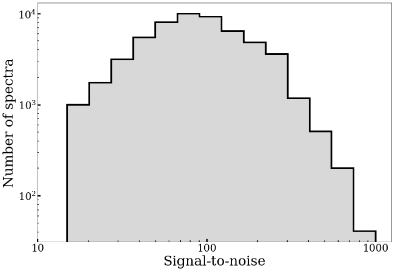
تحديد المعلمات النجمية ليس ضروريًا فقط لإنشاء النماذج السكانية، ولكن أيضًا لنمذجة درب التبانة وفهمنا للفيزياء الفلكية النجمية. وبالتالي، كانت هناك العديد من الدراسات والخوارزميات المخصصة لتحديد FSPs. بالنسبة للمسوحات واسعة النطاق، بما في ذلك MaStar، أصبح من الضروري أتمتة هذه العملية، وهو أمر ممكن الآن بفضل التقدم في قوة معالجة الكمبيوتر. يتضمن العمل الحالي المخصص لهذه المشكلة APOGEE خط معالجة المعلمات النجمية والوفرة الكيميائية (ASPCAP، García Pérez et al. (2016); Majewski et al. (2017)) الذي يستخدم نهج تقليل في حزمة البرامج FERRE. إنهم يحددون FSPs عن طريق مطابقة الأطياف المرصودة مع الأطياف الاصطناعية على مدى nm، وتُستخلص الوفرة الكيميائية بملاءمة مجال موجي ضيق حول الأطياف المستوفاة. يتم إجراء هذا التحليل بدقة طيفية أعلى من MaStar عند R . The Payne (Ting et al., 2019)يستخدم شبكة عصبية متصلة بالكامل ومدربة أيضًا على الأطياف الاصطناعية. يعتمد هذا النهج على رسم الخرائط لـ 25 تسميات نجمية لكل طيف وتستخدم تصغير المربعات الصغرى لتدريب أوزان الشبكة. مشابه لهذا، ولكن تم تدريبه على الأطياف النجمية التجريبية The Cannon (Ness et al., 2015). يستخدم هذا النهج طريقة نقل التعلم لتدريب نموذج يعتمد على البيانات على بعض الأطياف التجريبية ذات تسميات عالية الدقة وتطبيق النموذج على مكتبة مخصصة لأطياف المسح، مما يطابق دالة انتشار الخط (LSF) مع الأرصاد. علاوة على ذلك، برمجية Université de Lyon للتحليل الطيفي (ULySS, Koleva et al. (2009b)) ، والذي يعتمد على إصدار IDL المبكر من طريقة ملاءمة البكسل المعاقب عليها (pPXF، Cappellari & Emsellem (2004); Cappellari (2017)) يأخذ نهجا التقليل، مع البيانات التجريبية المقدمة من المحرف ELODIE كمجموعة مرجعية لها ومطابقة LSF بعد التحليل. يستخدمون أولاً خرائط التقارب لتحديد مجموعات المعلمات التي تتقارب إلى الحد الأدنى المطلق والمجموعات التي قد تؤدي إلى الحد الأدنى المحلي. ثم يستخدمون محاكاة مونت كارلو مع خرائط لكسر أي انحطاطات وتحديد المعلمات الجوية. على الرغم من نجاحها ودقتها، لا يمكن استخدام هذه الأساليب للتنبؤ بنطاق المعلمات الكامل لكائنات MaStar بسبب القيود في شبكة معلمات النموذج الخاصة بها ومجالات الأطوال الموجية الضيقة التي لا تناسب النطاق الواسع من الأنواع الطيفية النجمية المقدمة في MaStar. علاوة على ذلك، من خلال حساب المعلمات من تركيب نطاق واسع من الطول الموجي، فإننا أقل اعتمادًا على عدم الدقة المحتملة للخطوط الفردية في أجواء النموذج.
نقدم في هذا البحث طريقة لتحديد المعلمات النجمية التي اشتقنا بها FSPs من الكتالوج النهائي لأطياف MaStar (MPL11)، بما في ذلك 59,266 طيفًا لكل زيارة لـ 24,290 نجمًا فريدًا11 1 لاحظ أن الكتالوج الكامل للمعلمات سيكون متاحًا في إصدار البيانات الرسمي. للتوضيح للقراء خارج إطار التعاون SDSS-MaNGA، يتم إتاحة البيانات للجمهور من خلال إصدارات البيانات المجدولة (DRs) وتعميمها داخليًا في إطلاق منتج MaNGA (MPL). يرجى الرجوع إلى الجدول 1 من Law et al. (2021) لمزيد من التفاصيل وتواريخ كل إصدار للبيانات.. وهذا امتداد للطريقة التي طورناها لإصدار البيانات MaStar المبكر22 2 MaNGA Product Launch 7، فيما يلي MPL7، من 8,646 أطياف لكل زيارة لـ 3,321 النجوم كجزء من SDSS إصدار البيانات 15, Yan et al. (2019); Aguado et al. (2019)، دعمًا للنماذج السكانية النجمية الأولى المستندة إلى MaStar Maraston et al. (2020, المشار إليه فيما يلي باسم M20). في كلتا الحالتين، قمنا بتركيب الأطياف المرصودة مع شبكة واسعة من الأطياف النظرية من الأجواء النموذجية باستخدام كود الملاءمة الطيفية الكاملة pPXF (Cappellari & Emsellem, 2004; Cappellari, 2017). في هذا البحث، نعزز ملاءمة القوالب بتقنية مونت كارلو بسلاسل ماركوف (MCMC) من أجل رسم خريطة شاملة لفضاء المعلمات واستخلاص اللايقينيات. للاكتمال، في الملحق A نصف طريقتنا السابقة التي تستخدم نهج المتقطع ومقارنة النتائج مع Chen et al. (2020). في الملحق B تُقارن طريقتا المتقطعة وMCMC. الاستنتاج هو أنه - فيما يتعلق بأداء نماذج التجمعات النجمية - فإن النهجين متساويان في الجودة.
تجدر الإشارة أيضًا إلى وجود جهود أخرى ضمن MaStar لاستخلاص المعلمات النجمية بناءً على تقنيات وأساليب مختلفة (Chen et al., 2020)، Chen et al. (قيد التحضير)، Lazarz et al. (قيد التحضير) و Imig et al. (قيد التحضير). سيتم إصدار جميع المعلمات عبر كتالوج القيمة المضافة SDSS جنبًا إلى جنب مع الوسيط المحدد في ديسمبر 2021 والمقارنة بينهما موصوفة في Yan et al. 2021, قيد التحضير.
تُنظم هذه الورقة على النحو الآتي. يصف القسم 2 بإيجاز الميزات الرئيسية واختيار الهدف لـ MaStar. يقدم هذا القسم أيضًا وصفًا للأجواء النجمية النظرية المعتمدة وخطوات المعالجة المسبقة المطلوبة لتحليلنا. في القسم 3 نصف منهجيتنا ونتائجنا. في القسم 4 نقدم ملاءمات طيفي Sun وVega لاختبار منهجيتنا ضد النجوم ذات FSPs المحددة جيدًا. في هذا القسم، نقوم أيضًا بمقارنة مجموعة فرعية من معلماتنا مع كتالوجات المعلمات النجمية الأخرى. في القسم 5 نوضح العلاقة بين هذا العمل وحسابات النموذج السكاني. أخيرًا، نلخص العمل ونطرح اعتبارات مستقبلية في القسم 6.
2 البيانات
2.1 الأرصاد
الهدف من MaStar هو جمع الأطياف النجمية التي تغطي فضاء معلمات أوسع في Tو log g و [Fe/H] مقارنة بالمكتبات الأولية. ومع هذا الإصدار أصبحت MaStar تحتوي على 59,266 طيفًا عالي الجودة لكل زيارة لـ 24,290 نجمًا (MPL11). أول إصدار للبيانات العامة (DR15) مأخوذ من MPL7 من MaStar ويحتوي على 8,646 أطياف لكل زيارة لـ 3,321 نجمًا (Yan et al., 2019).
يتم إجراء الأرصاد على 2.5 m Sloan Foundation Telescope (Gunn et al., 2006) الواقع في Apache Point Observatory. تم إنشاء مكتبة MaStar بفضل الرصد الموازي مع APOGEE-2N (Majewski et al., 2016) المسح باستخدام حزم الألياف MaNGA لأخذ الأطياف الضوئية في نفس مجال الرؤية. يسمح استخدام حزم الألياف بمعايرة تدفق أكثر دقة مقارنة بطرق الألياف الفردية. علاوة على ذلك، يمكن لـ MaStar تحقيق نسبة إشارة إلى ضجيج أعلى لكل كائن (الوسيط = 96 (لكل بكسل طيفي) في MPL11؛ انظر الشكل 1) وتغطية أوسع للطول الموجي ( Å) مقارنة بالمسوحات الطيفية النجمية الأولية. تختلف دقة كل طيف فردي بسبب التغيرات في درجة حرارة الألياف ولأن المستوى البؤري وأجهزة CCD ليست مسطحة. نعرض في الشكل 2 الدقة المتوسطة المعتمدة على الطول الموجي لجميع MPL11 الأطياف، وتبلغ دقتها المتوسطة () تقريبًا 1800. ونظهر أيضا 1 و 2 نطاق قيم الدقة حول المتوسط، المشار إليه بأشرطة رمادية داكنة وفاتحة. يمكن العثور على تفاصيل الميزات الموجودة في ناقل الدقة في Yan et al. (2019) و Law et al. (2021). إن استخدام حزم الألياف MaNGA ومخططات الطيف BOSS يعني أن النماذج السكانية النجمية التي تم إنشاؤها باستخدام هذه المكتبة ستكون مناسبة تمامًا لتحليل MaNGA وأطياف SDSS الأخرى ومجموعة واسعة من المسوحات الطيفية الحالية والمقبلة.
كما ذكرنا، أحد الأهداف الرئيسية للمسح هو تغطية مساحة المعلم في الخصائص النجمية (T، log g و [Fe/H]) أكبر من الجهود الأولية. سيساهم ذلك في إنشاء نماذج SSP أكثر قوة مقارنة بالمكتبات التجريبية الأولية. وقد تم تحقيق ذلك من خلال إنشاء نظام القياس الضوئي والقياس الفلكي أولاً على أساس Pan-STARRS1 (Chambers et al., 2016) والرابطة الأمريكية لمراقبي النجوم المتغيرة (AAVSO) المسح الضوئي لجميع السماء (APASS)33 3 https://www.aavso.org/apass/). تم تحديد النجوم ذات المعلمات النجمية المعروفة في هذا الكتالوج والإحداثيات المستخدمة للاستهداف. من أجل استعادة تغطية موحدة في FSPs و [/Fe]، كتالوجات المعلمات النجمية الموجودة مثل Apache Point Observatory تجربة تطور المجرة (APOGEE، García Pérez et al. (2016)) ، امتداد سلون لاستكشاف المجرة وفهمها (SEGUE، Yanny et al. (2009)) والألياف الطيفية متعددة الأجسام لمنطقة السماء الكبيرة Telescope (LAMOST, Boeche et al. (2018)) ثم تم استخدامها لتوجيه الأرصاد. ويضمن هذا الاختيار المتطور للهدف أيضًا مراقبة النجوم الساخنة والباردة جدًا، بالإضافة إلى أخذ عينات زائدة من مجموعات نادرة من المعلمات النجمية. يراقب المسح أيضًا العديد من الأهداف عدة مرات، وهذا يساعد في تفسير أي تقلبات في الغلاف الجوي للنجوم. يرجى الرجوع إلى القسم 3 من Yan et al. (2019) لمزيد من التفاصيل حولـ MaStar اختيار الهدف.
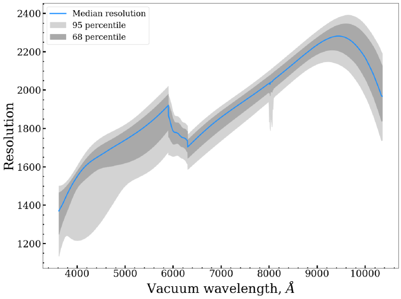
2.2 الأجواء النجمية الاصطناعية
تعتمد معظم خطوط أنابيب المعلمات النجمية على مقارنة الأرصاد ببيانات مرجعية موثوقة التي تم تحديد تحديد معلماتها بمستوى معين من الثقة. لهذا الغرض، نستخدم شبكات الغلاف الجوي النموذجية من MARCS (Gustafsson et al., 2008) و BOSZ-ATLAS9 (Mészáros et al., 2012; Bohlin et al., 2017). بشكل عام، يتم إنشاء الأجواء النجمية النظرية من خلال الجمع بين التحولات الذرية والجزيئية المعروفة مع بعض الافتراضات المتعلقة بخصائص مثل التوازن الديناميكي الحراري المحلي (LTE)، والاضطرابات الدقيقة () والهندسة النموذجية. يتم بعد ذلك إنتاج الأطياف الاصطناعية ومقارنتها بالأرصاد الرصدية.
باستخدام الأطياف الاصطناعية، يمكننا ضمان إمكانية نمذجة مجال الأطوال الموجية الكامل لأطياف MaStar ومطابقة الدقة عن طريق الرجوع إلى الدقة المعتمدة على الطول الموجي MaStar. في التكرارات المستقبلية لخط المعالجة الخاص بنا، نخطط لتضمين نماذج تراعي LSF في أطياف MaStar. ومع ذلك، فإن هذا سوف يزيد بشكل كبير من وقت الحساب.
باستخدام مكتبة النماذج MARCS يمكننا تغطية نطاق درجة الحرارة K، مع قيم log g تتراوح من إلى dex و[Fe/H] من إلى dex. نستخدم هندسة النموذج الكروي بين log g من و والمستوى الموازي بين log g من 3.5 و5.5 للحصول على وصف أكثر دقة لـ FSPs للعمالقة والأقزام. نضمن أيضًا ضبط معلمة الاضطراب الدقيق على kms-1 لجميع نماذج MARCS من أجل التجانس مع افتراضات BOSZ-ATLAS9 (انظر أدناه). تفترض نماذج MARCS أيضًا التوازن الديناميكي الحراري المحلي (LTE) وتستخدم نموذج طول الخلط القياسي للحمل الحراري. تم تنزيل الأطياف الاصطناعية الناتجة عن هذه النماذج بدقة وخفض رتبتها إلى دقة MaStar.
يغطي إصدار المكتبة النموذجية BOSZ-ATLAS9 درجات حرارة K، وتتراوح قيم log g من إلى dex و[Fe/H] من إلى dex. هذه النماذج ذات هندسة مستوية متوازية مع اضطراب دقيق قدره kms-1. الدقة التي تم تنزيلها هي قبل الرجوع إلى الدقة MaStar.
نحن نسمح ببعض الاستقراء للنماذج من خلال التوسيع حتى K في Teff، إلى وdex في log g وصولاً إلى dex لـ [Fe/H]. إن التمديد إلى K له ما يبرره لأنه في درجات الحرارة هذه، يكون الطيف قريبًا من الجسم الأسود. سيكون لاستقراء log g و[Fe/H] تأثير طفيف على عرض وعمق خطوط الامتصاص. هذا المزيج من المعلمات يعطي 3,907 و 5,891 MARCS و BOSZ-ATLAS9 أطياف، على التوالي. نقوم بعد ذلك بفصل الشبكات بناءً على المسبقات المسطحة الموصوفة في (انظر القسم 3.1). إذا كانت القيمة الدنيا لـ Teff الأولية أكبر من K، فسيتم استخدام نماذج BOSZ-ATLAS9 فقط. بخلاف ذلك، بالنسبة للأطياف الأكثر برودة، يتم استكشاف كلتا الشبكتين بشكل منفصل ويتم اختيار أفضل نموذج مناسب للشبكتين بناءً على . يتم ذلك لتجنب مشكلة الاستيفاء بين الأطياف الاصطناعية غير المستمرة في واجهة الشبكة النموذجية. يمكن العثور على شبكة معلمات النموذج في الشكل 3.
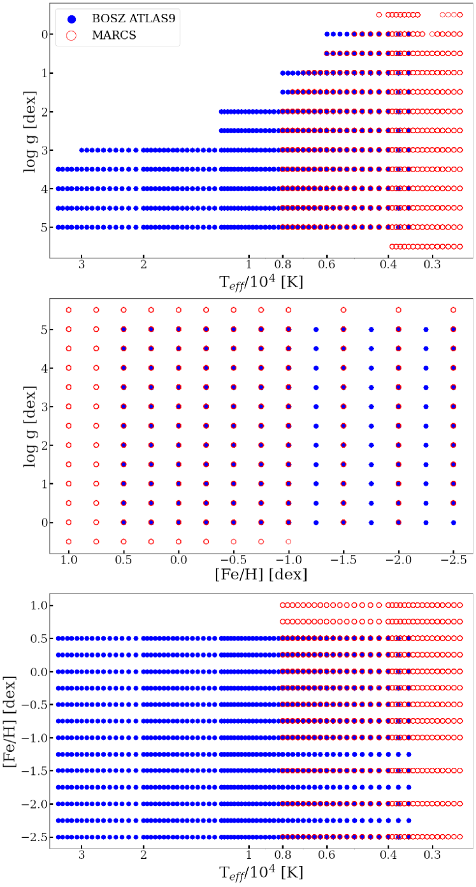
نركز في تحليلنا على معلمات الغلاف الجوي الرئيسية اللازمة لإنشاء نماذج سكانية نجمية: Teff، log g و [Fe/H]. ومع ذلك، هناك مجال لتوسيع فضاء هذه المعلمات لتشمل خصائص أخرى، مثل دوران النجوم، أو الاضطرابات الدقيقة، أو نسب وفرة العناصر، على سبيل المثال لا الحصر. ستؤثر هذه الخصائص على تحديد المعلمة بسبب العلاقات المتأصلة في الأطياف. في هذا البحث الأول نستخدم نماذج ذات مقياس شمسي في جميع الفلزيات، أي لا يوجد تحسين لعنصر ألفا بحيث تكون جميع النماذج متجانسة وقابلة للمقارنة فيما يتعلق بهذه المعلمة. يجب علينا معالجة تحديد وفرة العناصر التفصيلية في الأعمال المستقبلية. قيمة ثابتة لـ kms-1 تم اعتماده لأن هذا هو ما هو متاح في نماذج BOSZ (كما هو مستخدم أيضًا في الأعمال الأولية على سبيل المثال. Castelli & Kurucz (1994)). نحن نفترض أيضًا عدم وجود سرعة دوران.
لضمان أن هذه الافتراضات لا تتضمن منهجيات قوية في معلماتنا المشتقة، نقوم بتقييم التأثير من خلال وسرعة الدوران في الملحق C. والنتيجة هي أن تغيير يؤدي بشكل أساسي إلى إزاحة في Teff ولكن الفرق صغير بشكل عام (K) وضمن أخطاء المعلمات لدينا. بالنسبة للدوران، لا نرى أي علاقة بين السرعة والجاذبية. يعد حساب هذه التأثيرات ضروريًا عند استخلاص الخصائص من الخطوط الفردية بدقة عالية، ولكن بالنسبة للدقة المعتدلة لـ MaStar ولأننا نتلاءم مع نطاق واسع من الطول الموجي، يبدو الأمر ضئيلًا.
2.3 المعالجة المسبقة
قبل أن تتم مقارنة MaStar والأطياف الاصطناعية، يلزم إجراء بعض المعالجة المسبقة. نقوم أولاً بتخفيض نماذج MARCS وBOSZ-ATLAS9 إلى نفس متجه الدقة مثل الدقة المتوسطة لبيانات MaStar (انظر الشكل 2 لمتجه الدقة MaStar). نظرًا لأن الدقة تعتمد على الطول الموجي، فلا يمكننا استخدام نواة غوسية قياسية لخفض مستوى الأطياف الاصطناعية. بدلا من ذلك، نستخدم ’gaussian_filter1d’ المتوفرة في الحزمة pPXF. وهذا يسمح بوجود سيجما متغير (الانحراف المعياري للغاوسي) لكل بكسل وهو فعال من الناحية الحسابية. يتم أيضًا إعادة تشكيل النماذج بنفس سرعة أخذ العينات مثل البيانات، والتي تكون بالنسبة إلى أجهزة قياس الطيف SDSS km/s/pixel. ويتم ذلك من أجل إجراء مقارنة بين البكسل والبكسل لاحقًا في التحليل. لإعادة التشكيل، نستخدم حزمة بايثون SpectRes (Carnall, 2017) الذي يحافظ على كثافة التدفق لكل أنجستروم. يوجد مثال للنموذج الأصلي والمخفض في اللوحة العلوية من الشكل 4.
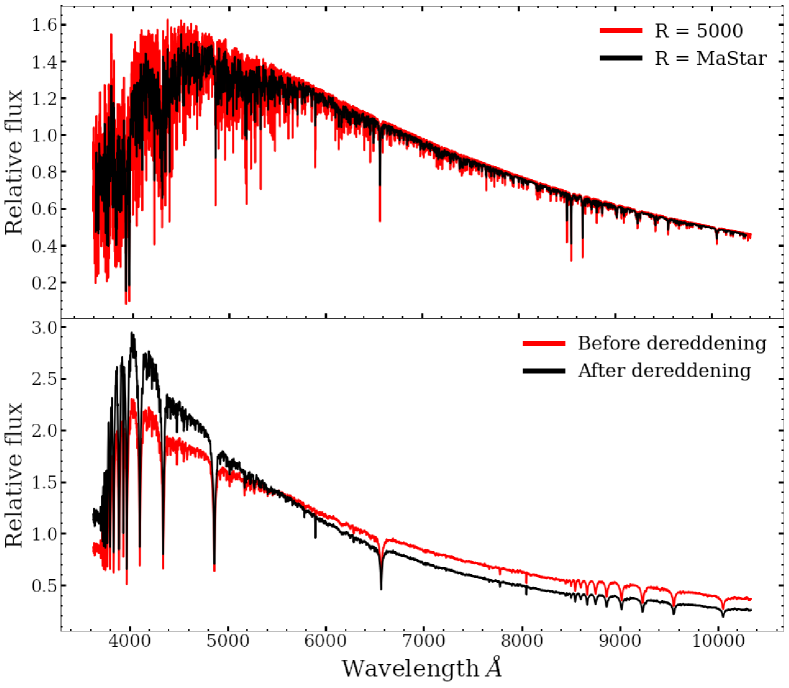
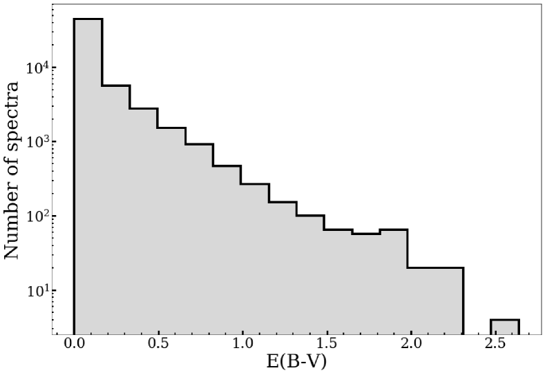
علاوة على ذلك، تتطلب الأطياف المرصودة تصحيحًا لإخماد الغبار، وهو ما يُشار إليه أيضًا بإزالة الاحمرار. وقد طُوبق كتالوج MaStar مع قيم المنظر في Gaia DR2 (Gaia Collaboration et al., 2018)، ما أعطى، من أصل 24,290 نجمًا فريدًا، 23,180 مطابقة نظيفة (أي إن نحو في المئة فقط من الأرصاد تفتقر إلى قيم منظر Gaia). وتتيح لنا مطابقة Gaia المتقاطعة أيضًا إنشاء مسبقات بناءً على القياسات الضوئية المنشورة، كما يوضح القسم 3.1. ثم تُستخدم تقديرات المسافة من Bailer-Jones et al. (2018) بالاقتران مع خريطة الغبار 3D التي قدمها Green et al. (2019)، والذين يستخدمون بيانات من مسوحات Gaia وPan-STARRS 1 و2MASS (Skrutskie et al., 2006) للحصول على قيم دقيقة لـ . وباستخدام قيم المحسوبة، نصحح الإخماد لكل رصد باستعمال دالة إخماد الغبار في Fitzpatrick (1999). انظر اللوحة السفلية من الشكل 4 التي تعرض طيفًا من MaStar بعد إزالة الاحمرار وفقًا لـ . ويظهر توزيع قيم للنجوم المستهدفة في الشكل 5. أما الأطياف التي لا تملك مطابقة Gaia أو مسافة من Bailor-Jones، وبالتالي لا تملك خريطة الغبار 3D ولا قيم منها، فلا نستخدمها في كتالوج المعلمات النهائي.
3 طريقة MCMC
نصف هنا استخدام طرائق مونت كارلو بسلاسل ماركوف (MCMC) بالتوازي مع كود الملاءمة الطيفية الكاملة pPXF لتحديد معلمات كتالوج MPL11 للأطياف النجمية. وباستخدام هذه الطريقة نستطيع استعمال إحصاء بوصفه مؤشرًا على جودة الملاءمة. وتُستخدم هذه القيم لتنظيف البيانات باستبعاد المعلمات المقترنة بملاءمات رديئة ذات قيم مرتفعة. غير أن إحصاء يكون، بالنسبة إلى النجوم الأبرد، أقل موثوقية كمقياس لجودة ملاءمة النموذج بسبب سمات مثل التوهجات النجمية التي لا تتضمنها الأغلفة الجوية النموذجية، ومن ثم قد ترفع قيمة مع بقاء المعلمات الأساسية معقولة. ونناقش كيفية تحديد عتبة في القسم 3.2.3.
3.1 المسبقات
يتم رسم أهداف MaStar أولاً في CMD باستخدام قيم القياس الضوئي من التطابق المتقاطع Gaia. نستخدم هذا للحصول على تقديرات مسبقة لـ Teff و log g، مع عدم وجود تقدير لـ [Fe/H]. في هذه الحالة، نرسم مسارات PARSEC النظرية المتساوية العمر (Bressan et al., 2012) لأعمار من Myr إلى Gyr، بما يوفر شبكة دقيقة وتغطية واسعة في كلا المعلمين (نستخدم K في Teff و إلى في log g) وفي فضاء CMD. بعد ذلك، بالنسبة لكل طيف، نأخذ في الاعتبار جميع الأزمنة المتساوية التي تمر عبر صندوق من و أخذ الحد الأدنى والحد الأقصى لقيم Teff و log g. بالنسبة للأهداف التي تقع خارج نطاق التغطية المتساوية الزمن، نقوم ببناء نفس المربع حول أقرب نقطة تساوي الزمن ونتبع نفس الإجراء. وعلاوة على ذلك، فإننا نفرض الحد الأدنى من Teff قبل على الأقل في المئة من أقرب قيمة تساوي الزمن لجميع الأهداف لأن ذلك يسمح بأخذ عينات كافية من K عند تحليل نطاق درجات الحرارة الأبرد. تتيح لنا التغطية الواسعة للمعلمات الحصول على مسبقات لجميع مجموعات المعلمات والأنواع النجمية.
تُظهر اللوحة اليسرى من الشكل 6 CMD بألوان Gaia مع تساوي PARSEC باللون الرمادي، وأهداف MaStar المطابقة لقياس الضوء باللون الأزرق ومثال للمربع الأولي باللون الأحمر. تُظهر اللوحات الوسطى واليمنى المسبقات المشتقة لـ Teff وlog g. نؤكد على أن هذه القيم تمثل أقرب قيم متساوية الزمن وأننا نأخذ الحد الأدنى والحد الأقصى من المعلمات داخل المربع المحدد مسبقًا والذي يحدد الزي الموحد المسبق على نطاق ثابت.
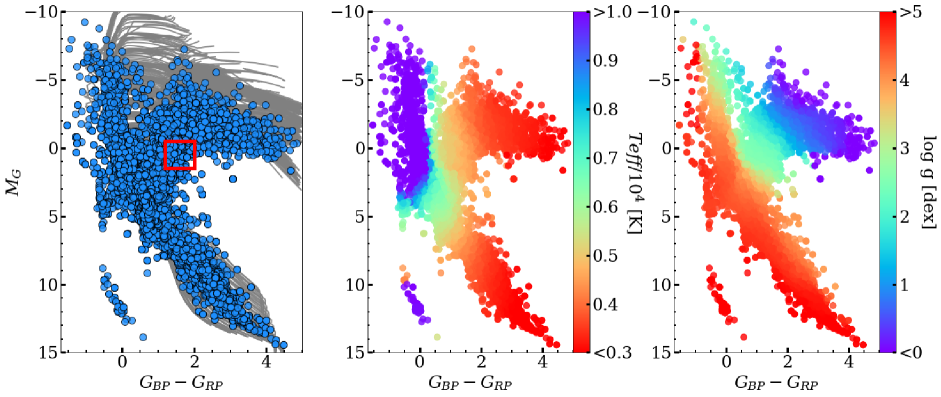
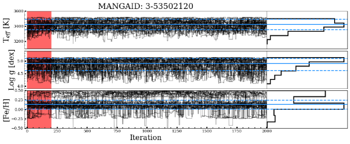
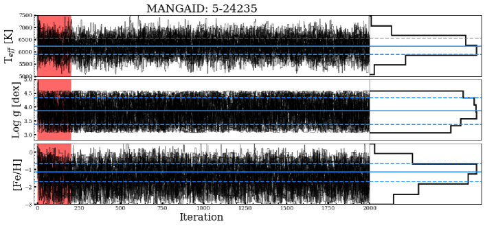
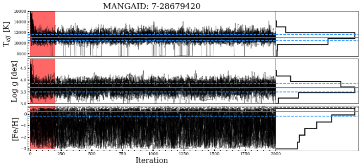
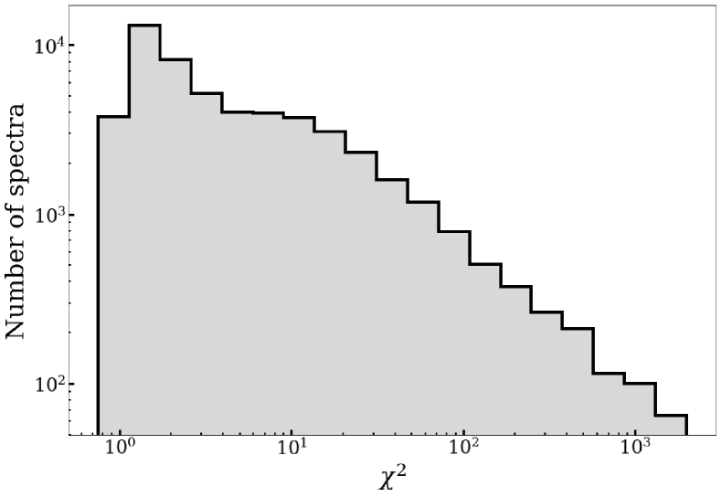
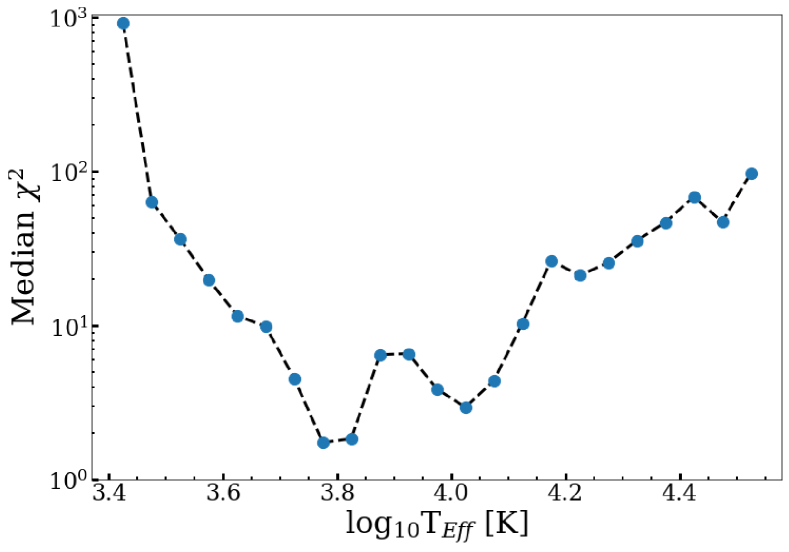
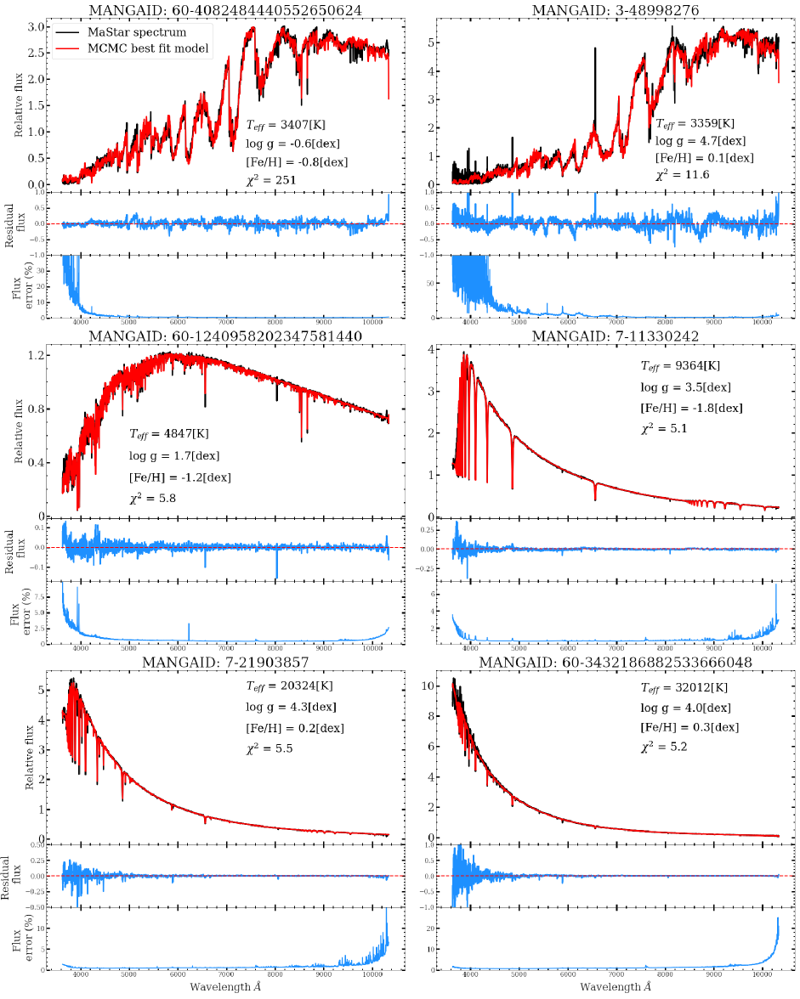
3.2 الإجراء
يتم تقريب التوزيع اللاحق لكل FSP باستخدام نظرية بايز:
| (2) |
حيث يمثل النموذج FSPs (Teff، log g و ) ويمثل spec طيفًا فرديًا مصححًا للإخماد. يتم تعريف الجزء الخلفي من خلال الاحتمالية () للنموذج المعطى للملاحظة ويمثله . الاحتمال هو احتمال الملاحظة المعطاة للنموذج ويمثله . يتم تعريف الاحتمال الأولي بواسطة في حالة عدم وجود بيانات جديدة. يتم تجاهله لأن هذا هو نفس عامل القسمة في جميع الحالات لنفس الملاحظة. بمعنى آخر، تقول المعادلة 2 أنه بالنظر إلى الطيف المرصود، يمكن العثور على الاحتمال الخلفي للمعلمات المرتبطة بالنموذج .
تمت صياغة دالة احتمالية السجل كما هو موضح في المعادلة 3 بافتراض أن القياسات مستقلة عن الأخطاء الموزعة على أساس غاوسي.
| (3) |
يمثل المصطلحان و قيمة التدفق والخطأ عند بكسل معين في الطيف. يمثل المصطلح التدفق عند كل بكسل مناظر من طيف النموذج المحرف خطيًا. تم تحديد هذا بواسطة FSPs (x) وقد تم بالفعل ربطه بواسطة pPXF سريعًا حيث يتم اقتراح كل نموذج جديد واستخدامه في الاحتمالية. يتضمن الإلتفاف ملاءمة النموذج المقترح مع متعددات الحدود المضاعفة من الدرجة السادسة. وهذا يسمح للمرء بحساب إزاحات السرعة الصغيرة في الطيف المرصود ومطابقة الاستمرارية الطيفية من أجل إجراء مقارنة بين المراقبة والنموذج. يتم استخدام متعددات الحدود المضاعفة من الدرجة السادسة حيث وجد أنها تنتج أفضل توازن بين استعادة المعلمات المستقرة وسرعة الحساب السريعة.
3.2.1 عينات المجموعة الثابتة المتغيرة
باستخدام MCMC، يمكن للمرء استكشاف مساحة معلمات متعددة الأبعاد من خلال استخدام سلاسل ماركوف - حيث يعتمد كل اقتراح جديد فقط على الأخير. يمكن أخذ عينات من الجزء الخلفي من المعلمات المستهدفة وفقًا لعدد من الخوارزميات المتاحة. في تحليلنا نستخدم حزمة بايثون emcee (Foreman-Mackey et al., 2013) والذي يستخدم تطبيقًا لأخذ عينات المجموعة الثابتة التي اقترحها Goodman & Weare (2010). نحن نقدم لمحة موجزة عن هذه الخوارزمية، ولكن نحيل القارئ المهتم إلى البحث الأصلية.
تسمح خاصية الثبات النسبي لأداة أخذ العينات بالتفوق في أداء أجهزة أخذ العينات القياسية، مثل Metropolis-Hastings أو Gibbs، عند أخذ عينات من توزيعات الكثافة متباينة الخواص. يوجد هذا النوع من التوزيع أحيانًا في العلاقة بين النجوم FSPs. يستخدم جهاز أخذ العينات مجموعة من "السائرون" - سلاسل عشوائية من النقاط التي تم أخذ عينات منها في كل مساحة معلمة مستهدفة - لاستكشاف الشكل الخلفي لكل معلمة. التوزيع المقترح لكل مشاية يقرر المكان الذي يجب أن تتحرك فيه بعد ذلك في السلسلة. في هذه الخوارزمية، يتم تحديد التوزيع من المواضع الحالية لجميع السائرون الآخرين في المجموعة (المجموعة التكميلية). تم اقتراح موضع جديد للمشاة من خلال رسم عشوائي للمشاة من المجموعة التكميلية.
| (4) |
هو الموقف المقترح يمثل خطوة السائر هو متغير عشوائي مأخوذ من التوزيع والذي يأخذ الشكل التالي (Goodman & Weare, 2010):
| (5) |
يمثل ’a’ أحد معلمات الضبط القليلة في هذه الخوارزمية، والتي تؤثر بشكل مباشر على جزء قبول السائرون، أي عدد الخطوات المقترحة المقبولة. يسمح جزء القبول المناسب للمشاة باستكشاف فضاء المعلمات دون الوقوع في الحد الأدنى المحلي. Foreman-Mackey et al. (2013) يقترح وكسر القبول بين . نجد أن قيمة ترجع كسر القبول وأن أكثر مطابقة لخط المعالجة الخاص بنا، مما يؤدي إلى كسر قبول متوسط قدره 0.27 عبر جميع الممرات. تتضمن المعلمات الأخرى القابلة للضبط عدد السائرون وعدد الخطوات في كل سلسلة مشاية.
3.2.2 تقدير المعلمة
لإنشاء التوزيع اللاحق، نستخدم مشايات ، كل خطوة من خطوات ، والتي يتم التخلص من خطوات منها كمرحلة احتراق. الغرض من الحرق هو إزالة أي انحياز في الجزء الخلفي من مواضع البداية للمشاة. يمكن العثور على مثال لمخططات تتبع مشايات المجموعة لثلاثة أهداف مختلفة MaStar ذات درجات حرارة متفاوتة في الشكل 7. تظهر فترة احتراق خطوات 200 من خلال المنطقة المظللة باللون الأحمر والخطوات التي تشكل الجزء الخلفي في المنطقة البيضاء. يظهر التوزيع اللاحق لكل مجموعة من خلال الرسم البياني الموجود على يمين كل لوحة، مع إظهار المعلمات والأخطاء المقدرة بواسطة الخطوط الأفقية الصلبة والمتقطعة على التوالي. المسبقات التي نستخدمها لكل MANGAID هي كما يلي. MANGAID 3-53502120: TK, log g dex, [Fe/H] dex. MANGAID 5-24235: TK, log g dex, [Fe/H] dex. MANGAID 7-28679420: Tdex, log g dex, [Fe/H] dex. تأتي هذه المسبقات من طريقة CMD الموضحة في القسم 3.1، حيث يعتمد النطاق الأولي على القياس الضوئي للهدف MaStar.
لتجنب التأثيرات الزائفة الناتجة عن دمج الشبكتين، نستكشف كلا الشبكتين بشكل مستقل للنجوم الأكثر برودة ونستخدم فقط BOSZ-ATLAS9 للنجوم الساخنة. لقد وجدنا أن BOSZ-ATLAS9 يوفر بشكل عام توافقًا أفضل مع في درجات الحرارة الأكثر سخونة. نستخدم درجة الحرارة الدنيا لـ Teff قبل أن نقرر ما إذا كان سيتم تحليل النجم باستخدام كلتا الشبكتين. إذا كان الحد الأدنى للسابق أكبر من K، يتم استخدام نماذج BOSZ-ATLAS9 فقط، وإلا يتم استخدام كلا النموذجين. في حالة استخدام كلتا الشبكتين، يتم اختيار المعلمات من أفضل نموذج مناسب مع أفضل نموذج مخفض .
نحن نطبق إزاحة صغيرة على المعلمات الموجودة في RGB (log g ) التي تم تعيين معلمات لها من نماذج MARCS. تتم تغطية غالبية الأطياف في فضاء المعلمات هذه بواسطة شبكات كلا النموذجين، باستثناء القليل منها التي تحتوي على TK ونماذج MARCS التي تدخل حيز التنفيذ. نلاحظ إزاحة منهجية صغيرة (BOSZ-ATLAS9 طرح MARCS) من K في Teff,dex في log g وdex في [Fe/H] في حدود TK و log g . لذلك نضيف هذه الإزاحات إلى المعلمات المستندة إلى MARCS من أجل إزالة أي تحيز. بالنسبة للنجوم القزمة، لا نطبق أي إزاحة لأن معظمها لا يمكن ملاءمته إلا من خلال نماذج MARCS.
نظرًا لأن التوزيعات الخلفية لـ Teff وlog g يتم إنتاجها من خلال النظر في المسبقات في تحليل MCMC، فإننا نأخذ القيمة المتوسطة للخلف لهذه المعلمات. ويتم ذلك لمراعاة أي عدم يقين في التوزيع ولإظهار الحل الأولي عند عدم العثور على حل قوي. بالنسبة لهذه المعلمات، نقوم بحساب الأخطاء باستخدام النسبتين المئويتين و للجزء الخلفي. نحن نقدر أفضل معلمة لـ [Fe/H] من خلال أخذ الحد الأقصى البعدي (MAP)، أي ما يعادل الوضع، حيث لا يتم تطبيق أي سابقة لهذه المعلمة وترجع MAP أفضل حل للمعلمةة المناسبة. للقيام بذلك، يتم استخدام تقدير كثافة النواة الغوسية لتقدير دالة الكثافة الاحتمالية وترجع القيمة القصوى لهذا MAP. لتقدير أخطاء هذه المعلمة، نأخذ الفاصل الزمني الموثوق به وقيم [Fe/H] المقابلة عند أي من طرفي الفاصل الزمني.
باستخدام FSPs لكل طيف، نقوم بعد ذلك بإنتاج طيف نموذجي محرف ونقدمه إلى pPXF للحصول على النموذج المصحح متعدد الحدود الذي كان من الممكن استخدامه لتقييم الاحتمالية في التحليل. يتم بعد ذلك حساب إحصائيات المخفضة للملاحظة والنموذج واستخدامها لاحقًا لتنظيف الكتالوج النهائي.
3.2.3 ملاءمات نجمية
توزيع يمكن رؤية القيم لكل طيف ونموذج مناسب في الشكل 8. نحن أيضًا نرسم العلاقة بين Teff والوسيط في الشكل 9. وكما هو موضح، هناك زيادة حادة في لدرجات الحرارة أدناه K (TK). ونلاحظ أيضًا الزيادة في مع ارتفاع درجات الحرارة فوق K (TK). عندما تصبح النجوم أكثر زرقة، تصبح المعالم الموجودة في الطيف متفرقة، مما يجعل من الصعب مطابقة النماذج بدقة. باستخدام هذا المخططات نقرر استبعاد قيم FSP ذات . علاوة على ذلك، فإننا نستثني الأطياف باستخدام TK ولا تستبعد هذه بناءً على معيار . هذا الاستثناء للملاءمات الضعيفة في درجات الحرارة المنخفضة يرجع إلى الميزات المعقدة الموجودة في درجات الحرارة هذه بالإضافة إلى أوجه القصور في الأجواء النظرية (Coelho et al., 2007; Gustafsson et al., 2008). ومع ذلك، فإن طريقتنا في تركيب نطاق واسع من الطول الموجي أقل اعتمادًا على بضعة خطوط فقط قد تحمل أخطاء كبيرة في الأطياف الاصطناعية. علاوة على ذلك، فإن ميزة استخدام نطاق واسع من الطول الموجي الذي نستكشفه مع MaStar لأول مرة، هو أنه يمكننا استخدام مجموعة كبيرة من الامتصاصات لتقييد معلماتنا. باستخدام هذا قطع نحن قادرون على الحفاظ عليه 93 في المئة من البيانات ذات قيم Gaia أثناء إزالة التلاؤمات الضعيفة. الجمع بين هذا القطع واستبعاد البيانات دون تقديرات المسافة بناءً على أوراق Gaia 89 في المئة من أطياف.
في الشكل 10 نقدم نموذجًا يناسب مجموعة من الأنواع النجمية. في كل مثال، نعرض ملاءمة النموذج في اللوحة العلوية، والمطابقة المتبقية في المنتصف وخطأ التدفق كنسبة مئوية من التدفق في اللوحة السفلية. على الرغم من أن نمذجة النجوم من النوع M تمثل تحديًا بشكل عام، إلا أننا قادرون على مطابقة كل من النطاقات TiO والميزات الثلاثية Ca II واستعادة قيم المنخفضة نسبيًا لنسبة كبيرة منها، كما هو موضح في اللوحات العلوية. يعد الطيف العملاق M الموجود في اللوحة العلوية اليسرى مثالًا جيدًا على سبب سماحنا بقيم العالية لـ TK. على الرغم من المطابقة الجيدة للنطاقات الجزيئية وخطوط الامتصاص، فإننا نستعيد عالية نسبيًا والتي ترجع إلى تدفق كبير وأخطاء صغيرة لمعظم هذا الطيف. يمكننا أيضًا استعادة توافق ممتاز مع طيف M القزم الموضح في اللوحة العلوية اليمنى على الرغم من ميزة M-flare القوية في Å. علاوة على ذلك، تم العثور أيضًا على بقايا صغيرة لأنواع نجمية ذات درجات حرارة أعلى. توضح المطابقة الموثوقة للنماذج مع الأرصاد عند درجات حرارة مختلفة كيف يمكننا إنتاج مجموعة قوية من المعلمات لحساب النماذج السكانية النجمية. يتم دعم هذه التلاؤمات الممتازة من خلال قيمة المتوسطة البالغة 2.3 لجميع الأطياف.
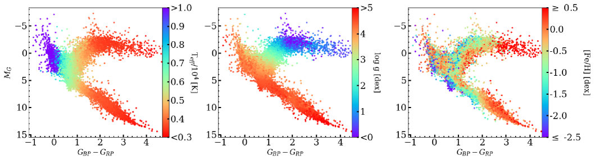
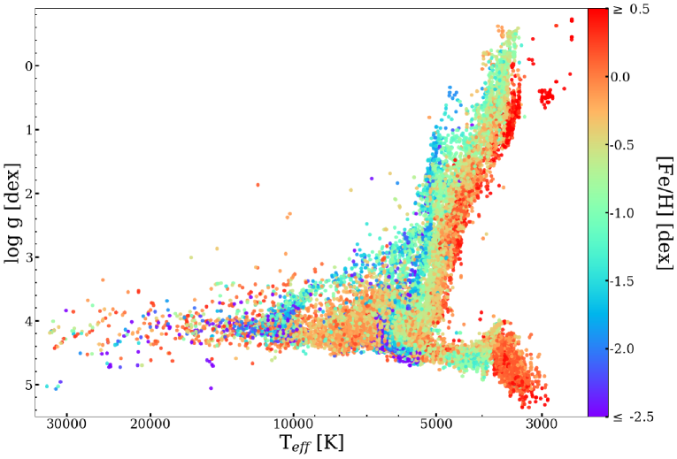
3.3 النتائج
يظهر في الشكل 11 CMDs للأهداف MaStar المرمزة بالألوان بواسطة المعلمات المستعادة. نقوم بإزالة البيانات الخاصة بالأقزام البيضاء والنجوم الزرقاء المتطرفة والنجوم EHB بالإضافة إلى الحفاظ على قطع ، باستثناء النجوم ذات TK. تُظهر هذه المقارنة أيضًا التحسن في تغطية الأنواع الطيفية في إصدار البيانات MPL11 فيما يتعلق بـ DR15 (MPL7) (الشكل 17). في MPL11، يتضح امتداد الأقزام والعمالقة إلى درجات حرارة أكثر برودة، وتسلسل رئيسي أكثر سخونة وتغطية أكثر كثافة للمناطق الموجودة بالمقارنة مع MPL7. نجد أن Teff تزداد مع انتقال الأهداف إلى الجانب الأزرق من CMD كما هو متوقع. درجات الحرارة الدنيا والقصوى هي K وK. يعكس الخطأ الصغير لأبرد نجم أن الطيف ربما يكون أبرد مما تسمح به شبكة النموذج. تنتج الجاذبية السطحية أيضًا نتائج متسقة مع عدم وجود قيم متطرفة واضحة، مما يؤدي إلى انخفاض القيمة تجاه المنطقة العملاقة من المخطط. لا تزال النجوم الفرعية الأفقية الزرقاء التي تعبر التسلسل الرئيسي موجودة في اللوحة الوسطى ولكن يصعب رؤيتها بسبب كثافة النقاط. الحد الأدنى والحد الأقصى لقيم log g هي dex وdex. [Fe/H] يصعب تفسيره، ولكن بالنسبة للتسلسل الرئيسي والفروع العملاقة هناك انخفاض في [Fe/H] حيث يتناقص GGRP، مما يؤدي إلى ارتفاع Teff. ويرجع ذلك إلى أن النجوم الفقيرة الفلزية تظهر فائضًا في الأشعة فوق البنفسجية بسبب تأثيرات حجب الخطوط، مما يزيد من Teff. الحد الأدنى والحد الأقصى لقيم [Fe/H] هي و dex44 4 تصل الأطياف المتعددة إلى الحد الأقصى من فلزية شبكة النموذج، ونقدم متوسط أخطائها في هذا الملخص.. وعلى غرار الأخطاء المتعلقة بأقل درجة حرارة، تشير هذه الأخطاء إلى أن هذه الأطياف من المحتمل أن تكون أكثر ثراءً بالمعادن مما تسمح به شبكة النموذج.
في الشكل 12 نقدم توزيع المعلمات لجميع الأطياف مع ما سبق وصفه قطع و Gaia القيم في HRD. هذا التمثيل قوي لأنه يسمح للشخص بالتعرف بسهولة على القيم المتطرفة والأطياف ذات العلامات الخاطئة. نجد تسلسلًا رئيسيًا مأهولًا جيدًا من منطقة القزم الباردة وحتى الجانب الأكثر سخونة. يوجد هيكل RGB محدد جيدًا في النطاق TK و log g . بالنسبة إلى RGB النجوم ذات log g ، نلاحظ تفضيل درجات الحرارة الباردة. الميزات المعقدة المقدمة في مثل هذه الفقرات SED تجعل من الصعب الحصول على T دقيقeff القيم. يحتوي RGB المستعاد على تدرج في [Fe/H] ينتقل إلى قيم أعلى للنجوم الأكثر برودة بسبب تأثيرات حجب الخطوط. مجموعة النجوم الغنية بالمعادن في TK, log g يعد dex والنجوم ذات الجاذبية المنخفضة المنتشرة أعلاه من أكثر النجوم احمرارًا التي نلاحظها في MaStar، مع متوسط ألوان Gaia (GGRP) من 4.2. لذلك نحن واثقون من أن درجة حرارتها يجب أن تضعها منفصلة عن RGB الرئيسية، وربما أكثر برودة 55 5 نشتبه في أن هذه نجوم متغيرة غنية بالأكسجين ونخطط لمزيد من فحصها في العمل المستقبلي.. النجوم القزمة الرائعة في Tيتم أيضًا التعرف بسهولة على K بقيم log g العالية التي تمتد إلى الأسفل dex. عادةً ما تكون المعادن الإجمالية للنجوم القزمة غنية بالمعادن. يتوافق هذا التوزيع مع الدراسات الأخرى للنجوم القزمة M المحلية مثل تلك التي أجراها Woolf & West (2012). علاوة على ذلك، يمكننا أيضًا استعادة المعلمات الخاصة بالأطوار النجمية المتوسطة مثل الفرع العملاق الفرعي عند T و log g بين 3 و 4dex. يتوافق الهيكل العام لهذا المخطط مع فهمنا الحالي لتطور النجوم بالإضافة إلى مخططات HRD الأخرى في الأدبيات.
في تلخيص الأخطاء لكل FSP، قمنا بتقسيم المعلم Teff إلى ثلاث صناديق من درجات الحرارة الباردة والمتوسطة والساخنة. في الجدول 1 نعرض الأخطاء لكل FSP في صناديق درجة الحرارة TK، TK وTK والتي تم تقديرها من PDF التي تم إنشاؤها بواسطة MCMC. نقدم متوسط أخطاء الحد العلوي والسفلي لكل FSP. مع زيادة صناديق Teff، هناك زيادة في خطأ Teff والذي يرجع مرة أخرى إلى عدد أقل من الميزات في SED من النجوم الأكثر سخونة وأن هذه الميزات تصبح أقل حساسية للتغيرات في درجات الحرارة. عدم اليقين في log g مستقل عن Teff. نرى أيضًا زيادة في عدم اليقين بشأن [Fe/H] في درجات الحرارة المرتفعة. ويرجع ذلك إلى أن النجوم الأكثر سخونة لديها خطوط امتصاص أقل من المعادن مما يجعل من الصعب تحديد الفلزية بدقة.
يمكن أيضًا تفسير دقة المعلمة من خلال النظر في الأرصاد المتكررة لنفس الهدف. للقيام بذلك، نقوم بحساب الخطأ القياسي لكل معلمة، لكل هدف، والإبلاغ عن القيمة المتوسطة لهذه الأخطاء. في الجدول 1 يتم عرض الخطأ المعياري للأرصاد المتكررة من الكتالوج المنظف. بالنسبة لدرجات الحرارة الباردة والمتوسطة، يكون الخطأ في Teff مشابهًا للزيادة في النجوم الأكثر سخونة، كما هو موضح في أخطاء PDF. لا تختلف أخطاء Log g كثيرًا بالنسبة لقيمتها الإجمالية، وبالنسبة لـ [Fe/H]، يكون خطأ النجوم الأكثر سخونة أكبر بثلاث مرات تقريبًا وهو ما يمكن توقعه لنفس سبب الخطأ PDF. الخطأ من PDF أكبر من الخطأ المعياري بسبب الخلفيات الواسعة الناتجة عن الاختلافات الدقيقة في أطياف النموذج عند تقدير المعلمات بهذه الدقة. ومع ذلك، نظرًا لأن الخطأ المعياري صغير بالنسبة لعمليات رصد مختلفة لنفس النجم، فقد أثبتنا أن الجزء الخلفي الواسع لا يسبب اختلافًا كبيرًا في المعلمات بين الأرصاد.
| FSP | Error | T | T | T |
| source | 5000 | 15,000 | ||
| Teff (K) | 166 | 413 | 2709 | |
| Repeat obs | 12 | 22 | 296 | |
| Log g (dex) | 0.4 | 0.4 | 0.4 | |
| Repeat obs | 0.03 | 0.01 | 0.03 | |
| (dex) | 0.4 | 0.6 | 1.0 | |
| Repeat obs | 0.04 | 0.07 | 0.22 |
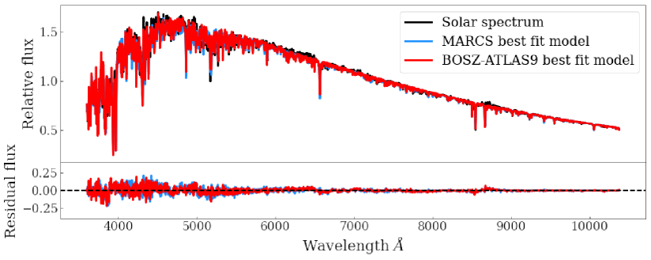
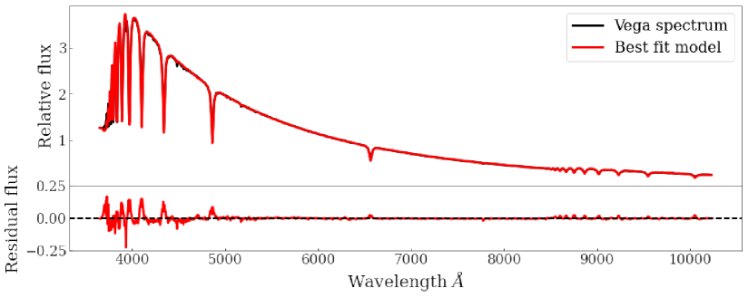
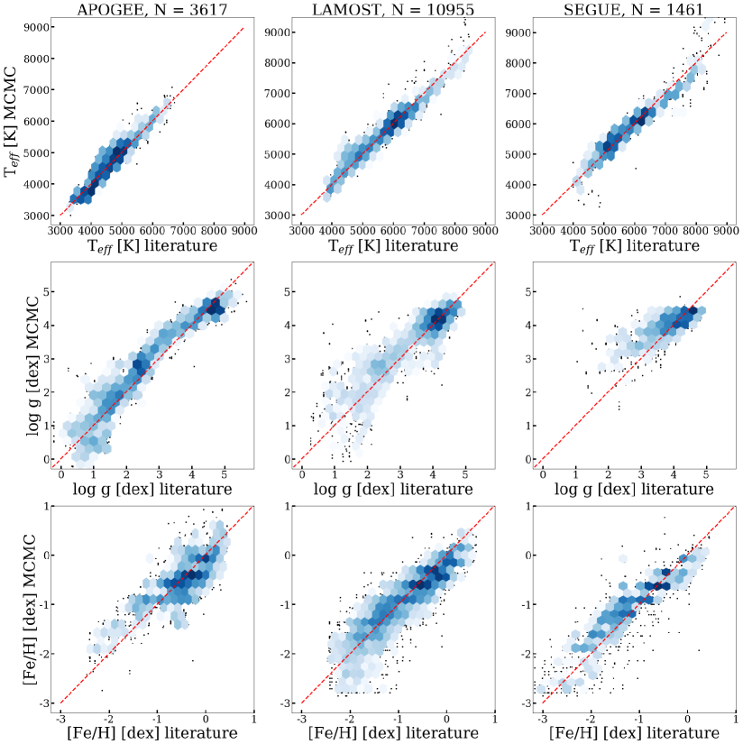
4 المقارنة والاختبار
4.1 ملاءمات نجمية من Sun و Vega
ومن خلال مطابقة الأجواء النجمية للنجوم القياسية القريبة، أصبحنا قادرين على الحصول على إحساس بدقة خوارزميتنا واستخدام النتائج لمعايرة توقعاتنا. تتمثل فائدة استخدام هذه النجوم القريبة في إمكانية دراسة أغلفتها الجوية بقدر كبير من التفصيل، مما يؤدي إلى الحصول على FSPs دقيقة في الأدبيات. في هذا التحليل، نستخدم طيف Sun الذي تم الحصول عليه بواسطة SOLar SPECtrometer (SOLSPEC، (Meftah et al., 2018)) وطيف Vega الذي تم الحصول عليه بواسطة Hubble Space Telescope، وهو متاح في أرشيف CALSPEC66 6 http://www.stsci.edu/hst/observatory/crds/calspec.html (Bohlin et al., 2014).
4.1.1 الشمس
لتحديد FSPs من Sun، نستخدم النموذجين MARCS وBOSZ-ATLAS9 بشكل مستقل لأن درجة الحرارة الفعالة Sun تقع ضمن منطقة التداخل لشبكات النموذج. وقد تم ذلك لتسليط الضوء على أي تحيزات في أي من النموذجين ولتجنب الأخطاء الناجمة عن الأطياف الاصطناعية غير المستمرة في السطح البيني MARCS وBOSZ-ATLAS9. على الرغم من أن الطيف الشمسي والنماذج تمتد إلى ما هو أبعد من مجال الأطوال الموجية MaStar ( Å)، فإننا نلائم الطيف في هذا النطاق ليكون متوافقًا مع نتائجنا الأخرى. علاوة على ذلك، لا نعتمد أي مسبقات لهذا التحليل ونبدأ خوارزمية MCMC بتخمين أولي لـ TK، log g = dex و[Fe/H] = dex عند تحليل الطيف الشمسي.
في اللوحة العلوية الشكل 13 نعرض الطيف المرصود لـ Sun والنماذج الملاءمة للطيف الكامل من MARCS وBOSZ-ATLAS9. تم توفير ملف SOL-SPEC الخاص بـ Sun من عدم اليقين في التدفق الذي تم استخدامه في احتمالية MCMC وعند حساب الانخفاض من ملاءمة النموذج. نرى هنا نموذجًا ممتازًا لميزات الامتصاص القوية مثل ثنائية NaD عند 5893Å، وH عند Å وثلاثية Ca II بين 8498 و 8662Å. يمكن أيضًا مقارنة جودة مطابقة النموذج بين مجموعتي القالب؛ MARCS إرجاع مخفض و BOSZ-ATLAS9 قيمة . تظهر بقايا كل ملاءمة في اللوحة السفلية في الشكل (نموذج طرح الملاحظة). وكما هو متوقع من التلاؤمات الطيفية الكاملة المماثلة، فإن المعلمات المستعادة قابلة للمقارنة أيضًا. تستعيد نماذج MARCS TK, log g = dex, dex. BOSZ-ATLAS9 نماذج تستعيد T, log g dex, dex. في Meftah et al. (2018)، قاموا بحساب درجة الحرارة الفعالة لـ Sun عن طريق معادلة تكامل الطيف الشمسي مع طيف الجسم الأسود عند K. مع نماذج MARCS نحن 40K أكثر سخونة من هذا و K أبرد بنماذج BOSZ-ATLAS9 مما يشير إلى أننا استعدنا Teff جيدا لهذا النوع الطيفي. الجاذبية السطحية لـ Sun في log g هي dex (Lide, 2005) مما يوضح أنه بالنسبة لكلا النموذجين، فإننا نبالغ قليلاً في تقدير هذه المعلمة، ولكنها لا تزال ضمن الأخطاء المقتبسة. أخيرًا، تم العثور على تقدير أقل من الفلزية [Fe/H] في كلا المجموعتين من النماذج، مع الفلزية الشمسية ([Fe/H] = dex) ضمن الأخطاء المقدرة.
4.1.2 Vega
في الشكل 14 نعرض التوافق الطيفي الكامل لطيف Vega باستخدام نماذج BOSZ-ATLAS9 (نماذج MARCS ليست ساخنة بدرجة كافية لتناسب هذا الطيف). نحن نأخذ أيضًا في الاعتبار عدم اليقين في التدفق عند حساب FSPs هنا. كما كان من قبل، تعرض اللوحة العلوية البيانات والنموذج من المعلمات المختارة، وتظهر اللوحة السفلية ما تبقى من المطابقة (نموذج طرح الملاحظة). هذا المطابقة يُرجع انخفاضًا من 5.8 مما يدل على مرونة الاستيفاء في طريقة MCMC. المعلمات المستعادة هي: TK, log g = dex, dex. في Castelli & Kurucz (1994)، يستشهدون بذلك من أجل Vega: TK, log g dex و dex. لـ Teff، نجد قيمة ذات قدر صغير من عدم اليقين نسبيًا ومتوافقة مع الأدبيات ضمن هامش الخطأ لدينا. نحن قادرون أيضًا على استعادة قيمة دقيقة جدًا لـ log g مع القليل من عدم اليقين. أخيرًا، قيمة [Fe/H] لدينا أقل من الأدبيات التي كتبها 0.7dex. ومع ذلك، هناك قدر كبير من عدم اليقين في تقديرنا لهذه المعلمة. من الصعب تحديد فلزية النجوم الساخنة لأنها تحتوي على عدد أقل من ميزات الامتصاص التي يمكن ملاءمتها. ونتيجة لذلك، نجد خلفية مسطحة نسبيًا عند معادن منخفضة لـ Vega.
4.2 مقارنة مع الأدبيات
| Source | Parameter | Median difference | Median difference | Median difference | |||
| (Dwarf) | (Dwarf) | (RGB) | (RGB) | (MS/HB) | (MS/HB) | ||
| APOGEE | Teff (K) | -161 | 127 | 39 | 202 | -37 | 227 |
| Log g (dex) | -0.1 | 0.2 | 0.3 | 0.4 | -0.1 | 0.3 | |
| [Fe/H] (dex) | -0.3 | 0.5 | 0.0 | 0.3 | -0.1 | 0.3 | |
| LAMOST | Teff (K) | -18 | 118 | 54 | 217 | -47 | 146 |
| Log g (dex) | -0.1 | 0.2 | 0.2 | 0.6 | 0.0 | 0.2 | |
| [Fe/H] (dex) | -0.3 | 0.3 | 0.0 | 0.3 | -0.1 | 0.3 | |
| SEGUE | Teff (K) | -94 | 377 | 142 | 204 | -49 | 295 |
| Log g (dex) | 0.0 | 0.2 | 0.3 | 0.6 | 0.0 | 0.4 | |
| [Fe/H] (dex) | -0.1 | 0.5 | 0.3 | 0.3 | 0.1 | 0.4 |
نظرًا لاستراتيجية اختيار الهدف المستخدمة في MaStar، هناك تداخل كبير بين النجوم ذات قيم الأدبيات والأرصاد MaStar. استخدام جهاز المسح الشامل للسماء بميكرونين (2MASS, Skrutskie et al. (2006)) معرفات MPL11 النجوم نجدها 2088 مطابقات فريدة (4786 التطابقات بما في ذلك الأرصاد المتكررة) مع APOGEE/APOGEE-2N DR16 المعلمات (Ahumada et al., 2020) التي تم اشتقاقها باستخدام ASPCAP. للمقارنة مع معلمات كتالوج النجوم LAMOST DR6-v2 A,F,G,K77 7 http://dr6.lamost.org/v2/، مشتقة باستخدام خط معالجة LAMOST Stellar Parameter (LASP، Xiang et al. (2015))، نحن نطابق MPL11 النجوم على أساس RA وDec، مع الحد الأقصى للخطأ 0.0001 درجة. وبذلك نجد 4954 مطابقات فريدة و 12,721 مطابقات للأرصاد المتكررة. للمقارنة مع SEGUE نستخدم المطابقة المتقاطعة من الاستهداف الأولي للأرصاد، كما هو موضح في القسم 2.1. تم اشتقاق هذه المعلمات باستخدام SEGUE Stellar Parameter Pipeline (SSPP، Lee et al. (2008a, b)). يعود هذا 804 تطابقات فريدة من نوعها مع MPL11 النجوم و 2457 مطابقة لجميع الأرصاد.
بالنسبة لكتالوجات الأدبيات الثلاثة الموضحة، نقوم بتنظيف المطابقات بناءً على معاييرنا المخفضة الخاصة ب 30، كما هو موضح سابقًا. في الشكل 15 نعرض مقارنة فردية لكل مسح والمعلمات المقابلة التي نستعيدها. يوجد في أعلى كل عمود عدد الأرصاد التي تمت مقارنتها. تُظهر الأشكال السداسية كثافة النقاط، ويمثل الظل الأغمق مناطق أكثر كثافة، بينما تمثل العلامات السوداء أطيافًا مفردة. يُظهر الخط الأحمر المتقطع خطًا واحدًا لواحد للمقارنة.
بالنظر إلى مقارنة Teff (الصف العلوي)، نرى إزاحة منهجية صغيرة لـ SEGUE وLAMOST عند درجات حرارة أعلى من K، حيث نقلل من درجة الحرارة مقارنة بالأدبيات. شوهدت اتجاهات منهجية طفيفة في log g. APOGEE لديه التوزيع الأكثر تجانسًا لقيم log g، والتي نميل إلى المبالغة في تقديرها عند القيم الأقل من dex. نحن أيضًا نبالغ في تقديرنا مقارنةً بـ LAMOST عند القيم المتوسطة، مع زيادة التشتت نحو الجاذبية المنخفضة. بالنسبة لجميع الكتالوجات، نحن متسقون بين المنطقة الأكثر كثافة في log g dex. بالنسبة إلى [Fe/H]، توضح مقارنة LAMOST أننا نجد المزيد من الحلول الفقيرة بالمعادن حيث يجدون قيم [Fe/H] dex. قد يكون هذا بسبب أن LASP تحتوي على أمثلة قليلة للنجوم الأكثر فقراً بالمعادن لأنها تعتمد على القوالب التجريبية. وبصرف النظر عن هذا، هناك اتفاق جيد مع APOGEE وLAMOST، مع بعض التشتت. نلاحظ أيضًا إزاحة منهجية طفيفة مع مقارنة SEGUE بين وdex.
| Source | Parameter | Error | Error | Error |
|---|---|---|---|---|
| (Dwarf) | (RGB) | (MS/HB) | ||
| APOGEE | Teff (K) | 152 | 225 | 167 |
| Log g (dex) | 0.3 | 0.6 | 0.3 | |
| [Fe/H] (dex) | 0.4 | 0.4 | 0.4 | |
| LAMOST | Teff (K) | 175 | 256 | 353 |
| Log g (dex) | 0.3 | 0.6 | 0.4 | |
| [Fe/H] (dex) | 0.4 | 0.4 | 0.6 | |
| SEGUE | Teff (K) | 281 | 430 | 475 |
| Log g (dex) | 0.3 | 0.6 | 0.4 | |
| [Fe/H] (dex) | 0.6 | 0.7 | 0.8 |
يتم عرض الانحراف المتوسط والمعياري للاختلافات بين قيمنا والأدبيات في الجدول 2، حيث نميز أيضًا بين ثلاث مراحل نجمية رئيسية. نحدد هذه المراحل في الفضاء Teff وlog g بناءً على معلماتنا: الأقزام (TK، log g )، RGB (TK، log g )، MS وHB (الأطياف المتبقية). بشكل عام نحصل على Teff أقل للأقزام و MS/HB وأكبر للنجوم RGB. بشكل عام، نجد أصغر إزاحة لجميع المسوحات الثلاثة عند تقدير Teff لـ MS/HB. يبدو أن التشتت هو الأكثر أهمية بالنسبة إلى SEGUE عبر جميع الأنواع النجمية، حيث يكون التشتت نحو LAMOST هو الأصغر في المتوسط. وهذا أمر مثير للاهتمام لأن المعلمات الأخيرة تعتمد أيضًا على تركيب طيف متوسط الدقة على نطاق واسع من الطول الموجي.
يعد متوسط الفرق والتشتت في log g هو الأكبر لكل مسح عند مقارنته بالنجوم RGB. قد يكون هذا بسبب احتواء RGB على أكبر نطاق في log g للمراحل النجمية الثلاث التي نحددها. بالنسبة للأقزام وMS/HB، لم يتم العثور على إزاحة كبيرة لكل مسح. يكون التشتت في log g أكبر بالنسبة للمقارنة LAMOST وSEGUE RGB، ولكن كما هو موضح في الشكل 15، تعتمد الإحصائيات على عدد قليل فقط من الأطياف بسبب نقص الأرصاد من الأدبيات في فضاء المعلمات هذه.
بالنسبة للفلزية، تكون الإزاحات المنهجية صغيرة، أما بالنسبة للمقارنة APOGEE وLAMOST RGB فلا نجد أي إزاحة. باستثناء RGB، نجد مشتتات أكبر قليلاً لمعلمات SEGUE.
في الجدول 3 نقوم بمقارنة الأخطاء المتوسطة التي نحسبها من الجزء الخلفي لكل معلمة مع نفس عينة النجوم في كل مقارنة أدبية للمراحل النجمية الثلاث. وبمقارنة هذه الأخطاء بقيم التشتت في الجدول 2 يمكننا الحصول على فكرة عما إذا كانت أخطاءنا معقولة. بالنسبة إلى Teff، الأخطاء التي نجدها تساوي تقريبًا التشتت APOGEE، مع وجود أكبر تناقض في MS/HB النجوم حيث يكون خطأنا أقل بمقدار K. هذا مشابه لـ LAMOST، إلا أن أخطائنا في MS/HB أكبر بمقدار K. تختلف الأخطاء بشكل أكبر في مقارنة SEGUE، حيث تكون الأخطاء أكبر بالنسبة إلى RGB وMS/HB بمقدار وK، على التوالي. الخطأ في log g يساوي تقريبًا تشتت جميع المسوحات وجميع المراحل النجمية. الأهم من ذلك، أن الزيادة في تشتت النجوم RGB التي نراها عبر جميع المسوحات تنعكس في خطأ أكبر في معلماتنا dex. بالمقارنة مع APOGEE، تختلف أخطائنا في [Fe/H] عن التشتت بواسطة dex. بالنسبة إلى LAMOST MS/HB النجوم، فإن أخطائنا في [Fe/H] أكبر بمقدار dex. أخطائنا أكبر أيضًا بالنسبة للنجوم SEGUE RGB وMS/HB.
5 نماذج SSP بوصفها مخرجات واختبارًا
كما ناقشنا في المقدمة، يلزم توافر معلمات نجمية لإدراج الأطياف النجمية الرصدية في نموذج تركيب سكاني. ومن ثم تعمل نماذج التجمعات النجمية أيضًا دليلًا لتحديد المناطق التي تحتاج إلى مزيد من معايرة مكتبة النجوم المدخلة. وقد طُرح هذا النهج في M20 للنماذج التي حُصل عليها بطريقة المتقطعة (الملحق A) على أول إصدار من بيانات MaStar، ويُعتمد كذلك للمعلمات المولدة لـ MPL11 باستخدام طريقة MCMC.
استُخدمت المعلمات النجمية المحسوبة بطريقة المتقطعة، وكذلك معلمات Chen et al. (2020)، في M20 لإنشاء مجموعتين من نماذج التجمعات النجمية سُميتا Th-MaStar وE-MaStar، على التوالي 88 8 متاحة في https://www.icg.port.ac.uk/mastar/، وتغطيان أعمارًا متوسطة/قديمة Gyr وفلزيات ([Z/H]) من إلى dex، ولمختلف IMFs. وكما وُصف، يشار إلى طريقة المتقطعة باسم Th لاعتمادها أغلفة جوية نجمية نظرية خالصة مرجعًا، في حين يشار إلى طريقة Chen et al. باسم ’E’ لأنها تستخدم مكتبة مرجعية شبه رصدية. وعلى وجه التحديد تُستخدم الأطياف الرصدية عند TK والقوالب النظرية في غير ذلك. كما تُشتق قياسات التركيب الكيميائي في النهاية باستخدام أغلفة جوية نموذجية نظرية.
في M20 أُجريت مقارنة مستفيضة بين نماذج E وTh، واستُخلصت منها استنتاجات بشأن المعلمات النجمية المقابلة. ونحيل القارئ إلى تلك الورقة لمزيد من التفصيل. ونلخص هنا بإيجاز نتائجهم لأنها وثيقة الصلة بحساب المعلمات النجمية الذي نجريه في هذا البحث.
أولًا، تستطيع نماذج Th الوصول إلى أعمار أصغر من نماذج E بفضل تغطية المعلمات الأوسع. ففي النظام شديد الفقر بالفلزات () تحديدًا، تتيح معلمات Th إنشاء نماذج بأعمار لانعطاف التسلسل الرئيسي تصل إلى 1 Gyr، مقارنة بأعمار 6 Gyr عند استخدام معلمات E (انظر الجدول 1 في M20). ومع معلمات Th نستطيع أيضًا تحديد أقزام التسلسل الرئيسي منخفضة الكتلة حتى حد احتراق الهيدروجين. وتظهر نتائج مشابهة في النظام الفقير بالفلزات ()، إذ تبلغ نماذج Th وE أعمار انعطاف منخفضة تصل إلى 0.5 Gyr. وتُظهر نماذج Th توافقًا جيدًا بين ميل RGB وما تتنبأ به المسارات متساوية العمر النظرية، في حين يكون RGB في نماذج E أبرد قليلًا عند الفلزية الشمسية ونصف الشمسية . علاوة على ذلك، تستطيع نماذج Th في التجمعات القديمة الغنية بالفلزات إعادة إنتاج حزم بارزة في القريب من تحت الأحمر بفضل تحديد أطياف الجزء العلوي البارد من RGB.
ولاختبار دقة نماذج التجمعات والمعلمات النجمية اختبارًا إضافيًا، اشتق M20 أعمارًا وفلزيات لأطياف عناقيد نجمية مرصودة من خلال الملاءمة الطيفية الكاملة (Wilkinson et al., 2017) وقارنوها بقيم الأدبيات. وكانت النتيجة أن تقديرات الفلزية تُستعاد بدرجة متشابهة في كلا النموذجين، مع إزاحة وسيطة تقارب dex وتشتت قدره dex، في حين كانت الأعمار تُستعاد على نحو أفضل باستخدام نماذج Th، مع إزاحات قد تبلغ 9 في المئة فقط تبعًا لقيم الأدبيات المفترضة.
تدعم نتائج M20 استخدامنا للأطياف النظرية وحدها وللملاءمة الطيفية الكاملة في حساب المعلمات النجمية، وهو ما دفعنا إلى توسيع إجراءنا إلى طريقة MCMC. وعلى الرغم من أن معلمات Chen et al. تعتمد في النهاية على أغلفة جوية نظرية، فإن الميزة الرئيسية لنماذج Th لدينا هي أننا لا نتقيد بشبكة المكتبة الرصدية المرجعية. وقد خضعت المعلمات النجمية المحسوبة بطريقة MCMC للإجراء نفسه؛ أي إن نماذج تجمعات اختبارية حُسبت بالتوازي مع حسابات المعلمات للتحقق من دقة المعلمات، ومن أي فجوة في تغطية الأطوار التطورية، ومن حد مربع كاي الدقيق الواجب تطبيقه، وغير ذلك. وأصبحت نماذج التجمعات النجمية المستندة إلى معلمات طريقة MCMC قادرة الآن على الامتداد إلى أعمار أصغر بكثير، وستُنشر في ورقة قادمة (Maraston et al. قيد التحضير).
6 الاستنتاجات
مكتبة MaNGA النجمية (MaStar) (Yan et al., 2019) ستكون أكبر مكتبة للأطياف النجمية عند اكتمالها. باستخدام حزم الألياف MaNGA IFU وخطوط أنابيب البرامج مع مخططات الطيف BOSS، فإن MaStar لها نفس مجال الأطوال الموجية والدقة المعتمدة على الطول الموجي مثل أطياف MaNGA. علاوة على ذلك، يحتوي الكتالوج على مجموعة واسعة من الأنواع النجمية التي تسمح بإنشاء نماذج سكانية نجمية قوية (Maraston et al., 2020).
نوسع طريقتنا لحساب المعلمات النجمية (Maraston et al., 2020)، القائمة على ملاءمة أطياف نظرية من أغلفة جوية نموذجية باستخدام كود الملاءمة الطيفية الكاملة pPXF (Cappellari & Emsellem, 2004; Cappellari, 2017)، بإضافة إجراء MCMC لمسح فضاء المعلمات مسحًا كاملًا وقياس اللايقينيات. كما نحدد طريقة أكثر تفصيلًا لإدراج القيود المستمدة من القياس الضوئي لـ GAIA. ونطبق هذه الطريقة على المجموعة الكاملة من MaStar، المؤلفة من 59,266 طيفًا لكل زيارة لـ 24,290 نجمًا فريدًا، لتحديد المعلمات النجمية الجوية الأساسية (Teff، وlog g، و[Fe/H]). وباستخدام القياس الضوئي المطابق في Gaia والمسارات متساوية العمر النظرية نستطيع أولًا وضع مسبقات واقعية على معلمتي Teff وlog g قبل حساب توزيعاتهما اللاحقة. ثم تُحدد FSPs بمقارنة الأرصاد بالأغلفة الجوية النجمية الاصطناعية من MARCS (Gustafsson et al., 2008) وBOSZ-ATLAS9 (Mészáros et al., 2012; Bohlin et al., 2017). وباستخدام مجال الأطوال الموجية الكامل لـ MaStar نصبح أقل حساسية لخطوط امتصاص منفردة قد تكون مضللة في الأطياف الاصطناعية. وبهذا النهج نستطيع الحصول على ملاءمات طيفية كاملة دقيقة عبر جميع الأنواع الطيفية، وهو أمر حاسم لإنشاء نماذج التجمعات النجمية. ونجد وسيط قدره 2.3 للأطياف ذات المعلمات المسترجعة.
والنتيجة هي كتالوج شامل للمعلمات، يمتد إلى TK؛ log g dex; . يتم توفير عدم اليقين أيضا. يحتوي المخطط H-R المقابل على بنية شاملة سليمة، مع فروع محددة جيدًا وبنية فلزية تخضع للتطور النجمي.
لاختبار إجراءاتنا، نقوم بإجراء تركيبات طيفية كاملة لـ Sun (الشكل 13) وVega (الشكل 14) من أجل اختبار المعلمات المستعادة لدينا مقابل المعلمات النجمية المعروفة جيدًا والمشتقة تجريبيًا. وباستخدام النموذجين MARCS وBOSZ-ATLAS9 بشكل مستقل، نجد نتائج ممتازة لكلا نجمي المعايرة.
يتم اختبار إجراءنا بشكل أكبر من خلال المقارنة مع معلمات الأدبيات الخاصة بالمسوحات المستقلة التي تم الحصول عليها باستخدام خطوط أنابيب المعلمات النجمية الخاصة بها. تنقسم هذه المقارنة إلى ثلاث مراحل نجمية رئيسية: الأقزام، RGB وMS/HB النجوم. نجد أقرب اتفاق من حيث متوسط الإزاحة والتشتت مع LAMOST وAPOGEE عبر الأنواع النجمية الثلاثة. وهذا أمر مشجع لأن LAMOST يقدم أكبر تطابق متقاطع للبيانات وبالتالي يمثل نتيجة ذات دلالة إحصائية أكثر ويعتمد APOGEE على المطيافية عالية الدقة على نطاق طول موجي صغير ومستقل تمامًا. بالنسبة إلى log g، أظهر RGB أكبر تشتت مع LAMOST وSEGUE والذي قد ينتج عن هذه المرحلة النجمية التي تحتوي على أكبر نطاق في قيم log g وأقل عدد من النجوم المتطابقة. بشكل عام، تظهر الإحصائيات وجود علاقة جيدة بين [Fe/H] باستثناء SEGUE.
نظرًا إلى كثرة الخطوات في كل خط معالجة، يُتوقع حدوث بعض الاختلاف بين الكتالوجات، ويصعب الجزم بأيها يمثل المعلمات الجوية "الحقيقية". ولاختبار صحة معلماتنا في النهاية، نستخدم نماذج التجمعات النجمية المبنية عليها ونقيّم قدرتها على استرجاع قيم العمر والفلزية المستقلة للأنظمة النجمية، كما فعلنا في Maraston et al. (2020). ففي تلك الورقة أظهرنا أنه، حتى باستخدام طريقة المتقطعة البسيطة نسبيًا (انظر الملحق A)، يمكن الحصول على مجموعة معلمات نجمية تسمح بإنشاء نماذج تجمعات نجمية دقيقة تعيد إنتاج أعمار وفلزيات العناقيد النجمية متوسطة العمر والقديمة على نحو جيد. ومع كتالوج MaStar الكامل وطريقة MCMC الموسعة، أصبحنا قادرين الآن على حساب نماذج تجمعات نجمية حتى أعمار لا تتجاوز بضعة Myr (Maraston et al. قيد التحضير)، وسنختبر ذلك بملاءمة العناقيد الكروية في ورقة قادمة.
وختامًا، اقتصرنا في هذا العمل على المعلمات النجمية الجوية الأساسية الثلاث اللازمة لإنشاء نماذج التجمعات النجمية. وفي الملحق C نستكشف بإيجاز أثر تغيير سرعة الدوران والاضطراب المجهري في شبكات النماذج، ووجدنا أن كلا الأثرين ضئيل عند الاستبانة الطيفية لـ MaStar. ونخطط الآن لاشتقاق وفرات العناصر الفردية لأطياف MaStar.
الشكر والتقدير
تعترف LH بالدعم المقدم من مجلس مرافق التكنولوجيا للعلوم & (STFC) بالإضافة إلى مركز العلوم المكثفة للبيانات في SEPnet (DISCnet). STFC معترف به أيضًا من قبل JN للحصول على الدعم من خلال المنحة الموحدة لعلم الكونيات والفيزياء الفلكية في بورتسموث، ST/S000550/1. يقر RY وDL بدعم منحة NSF AST-1715898. تم إجراء الحسابات الشكلية على المجموعة Sciama High Performance Compute (HPC) التي تدعمها ICG، SEPNet وUniversity of Portsmouth.
تمويل سلون ديجيتال سكاي تم توفير المسح الرابع من قبل Alfred P. Sloan Foundation، U.S. مكتب وزارة الطاقة العلم والمشاركة المؤسسات. SDSS-IV يعترف بالدعم والموارد المقدمة من مركز التعليم العالي حوسبة الأداء في University of Utah. SDSS الموقع هو www.sdss.org.
SDSS-IV تتم إدارته بواسطة Astrophysical Research Consortium ل Participating Institutions من SDSS Collaboration بما في ذلك Brazilian Participation Group, معهد كارنيجي للعلوم، Carnegie Mellon University، مركز الفيزياء الفلكية | هارفارد & سميثسونيان، المشاركة التشيلية المجموعة، French Participation Group، معهد Astrofísica de جزر الكناري، وجونز هوبكنز جامعة، معهد كافلي الفيزياء والرياضيات الكون (IPMU) / جامعة طوكيو، Korean Participation Group، Lawrence Berkeley National Laboratory, معهد لايبنيز für الفيزياء الفلكية بوتسدام (AIP)، معهد ماكس بلانك für علم الفلك (MPIA Heidelberg), معهد ماكس بلانك für الفيزياء الفلكية (MPA Garching)، معهد ماكس بلانك für فيزياء خارج الأرض (MPE), المراصد الفلكية الوطنية الصين، New Mexico State University، New York University، جامعة نوتردام، Observatário ناسيونال / MCTI، ولاية أوهايو جامعة ولاية بنسلفانيا جامعة شنغهاي المرصد الفلكي، الولايات المتحدة مجموعة المملكة المشاركة، الجامعة الوطنية Autóنوما دي México، جامعة أريزونا، جامعة كولورادو بولدر, جامعة أكسفورد، جامعة بورتسموث، University of Utah، جامعة فرجينيا، جامعة واشنطن، جامعة ويسكونسن، Vanderbilt University، و Yale University.
توفر البيانات
لن نقوم بنشر البيانات التي تستند إليها هذه المقالة إلا من خلال الإصدارات الرسمية لـ SDSS-IV.
References
- Aguado et al. (2019) Aguado D. S., et al., 2019, ApJS, 240, 23
- Ahumada et al. (2020) Ahumada R., et al., 2020, ApJS, 249, 3
- Bailer-Jones et al. (2018) Bailer-Jones C. A. L., Rybizki J., Fouesneau M., Mantelet G., Andrae R., 2018, AJ, 156, 58
- Blanton et al. (2017) Blanton M. R., et al., 2017, AJ, 154, 28
- Boeche et al. (2018) Boeche C., Smith M. C., Grebel E. K., Zhong J., Hou J. L., Chen L., Stello D., 2018, AJ, 155, 181
- Bohlin et al. (2014) Bohlin R. C., Gordon K. D., Tremblay P. E., 2014, PASP, 126, 711
- Bohlin et al. (2017) Bohlin R. C., Mészáros S., Fleming S. W., Gordon K. D., Koekemoer A. M., Kovács J., 2017, AJ, 153, 234
- Bressan et al. (2012) Bressan A., Marigo P., Girardi L., Salasnich B., Dal Cero C., Rubele S., Nanni A., 2012, MNRAS, 427, 127
- Bruzual & Charlot (2003) Bruzual G., Charlot S., 2003, MNRAS, 344, 1000
- Bruzual A. (1983) Bruzual A. G., 1983, ApJ, 273, 105
- Bundy et al. (2015) Bundy K., et al., 2015, ApJ, 798, 7
- Cappellari (2017) Cappellari M., 2017, MNRAS, 466, 798
- Cappellari & Emsellem (2004) Cappellari M., Emsellem E., 2004, PASP, 116, 138
- Carnall (2017) Carnall A. C., 2017, arXiv e-prints, p. arXiv:1705.05165
- Castelli & Kurucz (1994) Castelli F., Kurucz R. L., 1994, A&A, 281, 817
- Chambers et al. (2016) Chambers K. C., et al., 2016, arXiv e-prints, p. arXiv:1612.05560
- Chen et al. (2014) Chen Y.-P., Trager S. C., Peletier R. F., Lançon A., Vazdekis A., Prugniel P., Silva D. R., Gonneau A., 2014, A&A, 565, A117
- Chen et al. (2020) Chen Y.-P., et al., 2020, ApJ, 899, 62
- Coelho et al. (2007) Coelho P., Bruzual G., Charlot S., Weiss A., Barbuy B., Ferguson J. W., 2007, MNRAS, 382, 498
- Conroy et al. (2009) Conroy C., Gunn J. E., White M., 2009, ApJ, 699, 486
- Drory et al. (2015) Drory N., et al., 2015, AJ, 149, 77
- Eisenstein et al. (2011) Eisenstein D. J., et al., 2011, AJ, 142, 72
- Fioc & Rocca-Volmerange (1997) Fioc M., Rocca-Volmerange B., 1997, A&A, 500, 507
- Fitzpatrick (1999) Fitzpatrick E. L., 1999, PASP, 111, 63
- Foreman-Mackey et al. (2013) Foreman-Mackey D., Hogg D. W., Lang D., Goodman J., 2013, PASP, 125, 306
- Gaia Collaboration et al. (2018) Gaia Collaboration et al., 2018, A&A, 616, A1
- García Pérez et al. (2016) García Pérez A. E., et al., 2016, AJ, 151, 144
- Głȩbocki & Gnaciński (2005) Głȩbocki R., Gnaciński P., 2005, in Favata F., Hussain G. A. J., Battrick B., eds, ESA Special Publication Vol. 560, 13th Cambridge Workshop on Cool Stars, Stellar Systems and the Sun. p. 571
- Gonneau et al. (2020) Gonneau A., et al., 2020, A&A, 634, A133
- Goodman & Weare (2010) Goodman J., Weare J., 2010, Communications in Applied Mathematics and Computational Science, Vol.~5, No.~1, p.~65-80, 2010, 5, 65
- Gray (2008) Gray D. F., 2008, The Observation and Analysis of Stellar Photospheres. Cambridge University Press
- Green et al. (2019) Green G. M., Schlafly E., Zucker C., Speagle J. S., Finkbeiner D., 2019, ApJ, 887, 93
- Gunn et al. (2006) Gunn J. E., et al., 2006, AJ, 131, 2332
- Gustafsson et al. (2008) Gustafsson B., Edvardsson B., Eriksson K., Jørgensen U. G., Nordlund Å., Plez B., 2008, A&A, 486, 951
- Koleva et al. (2009a) Koleva M., Prugniel P., Bouchard A., Wu Y., 2009a, A&A, 501, 1269
- Koleva et al. (2009b) Koleva M., Prugniel P., Bouchard A., Wu Y., 2009b, Astronomy & Astrophysics, 501, 1269–1279
- Law et al. (2015) Law D. R., et al., 2015, AJ, 150, 19
- Law et al. (2016) Law D. R., et al., 2016, AJ, 152, 83
- Law et al. (2021) Law D. R., et al., 2021, AJ, 161, 52
- Le Borgne et al. (2003) Le Borgne J.-F., et al., 2003, A&A, 402, 433
- Lee et al. (2008a) Lee Y. S., et al., 2008a, Astron. J., 136, 2022
- Lee et al. (2008b) Lee Y. S., et al., 2008b, Astron. J., 136, 2050
- Leitherer et al. (1999) Leitherer C., et al., 1999, ApJS, 123, 3
- Lide (2005) Lide D. R., 2005, CRC Handbook of Chemistry and Physics: A Ready-Reference of Chemical and Physical Data, 85th ed. American Chemical Society
- Majewski et al. (2016) Majewski S. R., APOGEE Team APOGEE-2 Team 2016, Astronomische Nachrichten, 337, 863
- Majewski et al. (2017) Majewski S. R., et al., 2017, AJ, 154, 94
- Maraston (1998) Maraston C., 1998, MNRAS, 300, 872
- Maraston (2005) Maraston C., 2005, MNRAS, 362, 799
- Maraston & Strömbäck (2011) Maraston C., Strömbäck G., 2011, MNRAS, 418, 2785
- Maraston et al. (2020) Maraston C., et al., 2020, In preparation
- Martins et al. (2005) Martins L. P., González Delgado R. M., Leitherer C., Cerviño M., Hauschildt P., 2005, MNRAS, 358, 49
- Meftah et al. (2018) Meftah M., et al., 2018, A&A, 611, A1
- Mészáros et al. (2012) Mészáros S., et al., 2012, AJ, 144, 120
- Montalbán et al. (2007) Montalbán J., Nendwich J., Heiter U., Kupka F., Paunzen E., Smalley B., 2007, in Kupka F., Roxburgh I., Chan K. L., eds, Proceedings IAU Symposium Vol. 239, Convection in Astrophysics. pp 166–168, doi:10.1017/S1743921307000361
- Ness et al. (2015) Ness M., Hogg D. W., Rix H.-W., Ho A. Y. Q., Zasowski G., 2015, ApJ, 808, 16
- Pickles (1998) Pickles A. J., 1998, PASP, 110, 863
- Prugniel & Soubiran (2001) Prugniel P., Soubiran C., 2001, A&A, 369, 1048
- Renzini & Buzzoni (1986) Renzini A., Buzzoni A., 1986, in Chiosi C., Renzini A., eds, Astrophysics and Space Science Library Vol. 122, Spectral Evolution of Galaxies. pp 195–231, doi:10.1007/978-94-009-4598-2_19
- Sánchez-Blázquez et al. (2006) Sánchez-Blázquez P., et al., 2006, MNRAS, 371, 703
- Skrutskie et al. (2006) Skrutskie M. F., et al., 2006, AJ, 131, 1163
- Smee et al. (2013) Smee S. A., et al., 2013, AJ, 146, 32
- Thomas et al. (2003) Thomas D., Maraston C., Bender R., 2003, MNRAS, 339, 897
- Thomas et al. (2011) Thomas D., Maraston C., Johansson J., 2011, MNRAS, 412, 2183
- Ting et al. (2019) Ting Y.-S., Conroy C., Rix H.-W., Cargile P., 2019, ApJ, 879, 69
- Tinsley (1972) Tinsley B. M., 1972, A&A, 20, 383
- Tinsley (1980) Tinsley B. M., 1980, Fundamentals Cosmic Phys., 5, 287
- Vazdekis et al. (1996) Vazdekis A., Casuso E., Peletier R. F., Beckman J. E., 1996, ApJS, 106, 307
- Vazdekis et al. (2010) Vazdekis A., Sánchez-Blázquez P., Falcón-Barroso J., Cenarro A. J., Beasley M. A., Cardiel N., Gorgas J., Peletier R. F., 2010, MNRAS, 404, 1639
- Vazdekis et al. (2012) Vazdekis A., Ricciardelli E., Cenarro A. J., Rivero-González J. G., Díaz-García L. A., Falcón-Barroso J., 2012, MNRAS, 424, 157
- Wilkinson et al. (2017) Wilkinson D. M., Maraston C., Goddard D., Thomas D., Parikh T., 2017, MNRAS, 472, 4297
- Woolf & West (2012) Woolf V. M., West A. A., 2012, MNRAS, 422, 1489
- Xiang et al. (2015) Xiang M. S., et al., 2015, MNRAS, 448, 822
- Yan et al. (2016a) Yan R., et al., 2016a, AJ, 151, 8
- Yan et al. (2016b) Yan R., et al., 2016b, AJ, 152, 197
- Yan et al. (2019) Yan R., et al., 2019, ApJ, 883, 175
- Yanny et al. (2009) Yanny B., et al., 2009, AJ, 137, 4377
- York et al. (2000) York D. G., et al., 2000, AJ, 120, 1579
Appendix A طريقة المتقطعة
نلخص هنا طريقة تحديد المعلمات المستخدمة لإنشاء نماذج MaStar للتجمعات النجمية ذات الأعمار المتوسطة والقديمة في M20. تم تطبيق هذه الطريقة على DR15 (MPL7) أطياف MaStar - 8,646 أطياف لـ 3,321 نجوم فريدة. وقد وُسعت هذه الطريقة الآن كما وُصف في البحث واستُخدمت بدءًا من MPL11 فصاعدًا.
A.1 الأجواء النجمية الاصطناعية والأولويات
نقارن الأرصاد بالأطياف النظرية من الأجواء النموذجية لـ MARCS (Gustafsson et al., 2008) و BOSZ-ATLAS9 (Mészáros et al., 2012; Bohlin et al., 2017). يمكن رؤية شبكة النموذج المدمجة في الشكل 3. في المنطقة التي تتداخل فيها الشبكات، يتم استكشافها في وقت واحد ثم يتم استخلاص FSPs من ملاءمة القوالب الأفضل. في هذه المنطقة المشتركة نجد من الأرصاد المطابقة لنماذج BOSZ والباقي المطابقة لنماذج MARCS.
قبل التحليل، نقوم بتضييق نطاق الشبكة النظرية من خلال اعتماد مسبقات تعتمد على القياس الضوئي لتقليل وقت الحساب. لقد تحققنا من أن النتيجة دون تطبيق هذه المسبقات هي نفسها، ولكن وقت الحساب أطول بكثير.
لتقدير Teff الأولية، نقوم بتقريب دالة تصف العلاقة بين اللون () وTeff للنماذج النظرية. نظرًا لأنه تم أخذ عينات من شبكة منفصلة، يتم استخدام وظيفة الاستيفاء ذات الأبعاد 1 لمطابقة اللون المرصود لدينا مع درجة حرارة فعالة. تُشتق مقادير من أطياف MaStar لكل ملاحظة ويتم توفيرها لوظيفة الاستيفاء التي تُرجع Teff المقابلة، وفقًا للنماذج النظرية (انظر الشكل 16). ويستخدم هذا التقدير بعد ذلك لتحديد نطاق سابق، حيث يكون لتقدير TK مدى قدره K وتقدير TK له مدى K. يكون النطاق الأولي أكبر بالنسبة لدرجات الحرارة المرتفعة حيث تكون التقديرات أقل دقة في درجات الحرارة هذه وتصبح الشبكة النظرية أقل كثافة.
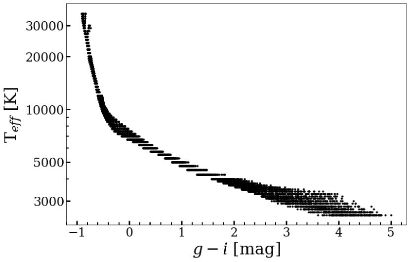
A.2 الإجراء
من خلال تقليل قيمة بين النماذج التي تقع ضمن نطاقنا الأولي والأطياف المحددة، يمكن الحصول على FSPs. باستخدام هذه الطريقة، يتم اشتقاق FSPs من أفضل التلاؤمات الفردية وليس من مجموعة من النماذج.
يتم تنفيذ مطابقة النموذج باستخدام pPXF (Cappellari & Emsellem, 2004; Cappellari, 2017). تُستخدم عادةً لتركيب حركيات النجوم والغاز مع المجموعات النجمية للمجرات، وهنا نستخدم هذه الطريقة لتناسب القوالب النجمية الفردية بشكل فردي. باستخدام pPXF، يمكن تحديد معلمات توزيع سرعة خط البصر (LOSVD) للهدف ومن ثم حساب إزاحات السرعة الصغيرة في الطيف المرصود. يتم تنفيذ معلمات LOSVD في pPXF باستخدام وظائف Gauss-Hermite (انظر القسم 3.2 في Cappellari (2017)). علاوة على ذلك، يتم حساب عدم الدقة في المعايرة الطيفية أو في تأثيرات الاحمرار الناتجة عن الغبار من خلال تركيب الطيف المرصود مع متعددات الحدود المضاعفة.
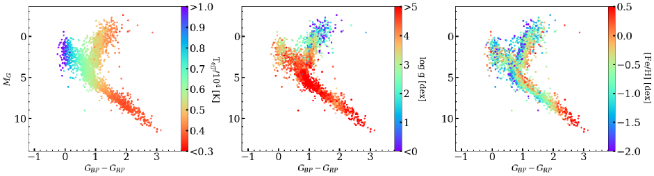
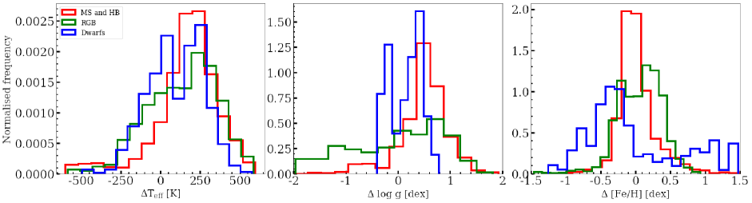
A.3 النتائج
يمكن إجراء تقييم واحد لجودة مطابقة نماذجنا من خلال النظر في توزيع قيم المخفضة لجميع الأرصاد، والتي نجد أن القيمة المتوسطة هي 8.0 بهذه الطريقة. على الرغم من استخدام شبكة خشنة نسبيًا من أطياف النماذج، إلا أننا قادرون على الحصول على توافقات جيدة كما تشهد على ذلك القيمة المنخفضة للمتوسط . توفر جودة المطابقة للبيانات بعض الثقة في المعلمات المستعادة. ومع ذلك، من خلال اتخاذ أفضل نموذج مناسب، لا يتم تحديد الانحطاطات الموجودة.
باستخدام القيم المطابقة للقياس الضوئي Gaia للأهداف MaStar يمكننا ترميز مخططات CMD بالألوان مع النتائج المستردة. ومن خلال القيام بذلك، يمكن التعرف على الأطياف ذات العلامات الخاطئة من خلال فهمنا لتطور النجوم. اللوحات الثلاث من الشكل 17 إظهار المخططات CMD لـ Teff، log g و [Fe/H] على التوالي. على المحور السيني نستخدم Gaia مؤشر الألوان لـ الذي يمثل نطاقي التمرير الأزرق والأحمر للأداة والمحور y هو الحجم المطلق Gaia، . نرى اتفاقًا جيدًا لـ Teff مع انتقال الألوان الزرقاء إلى درجات حرارة أكثر سخونة. بالنسبة إلى log g، نتوقع أن تظهر الأقزام الباردة قيمًا عالية وأن تتناقص هذه القيم للتناقص بسبب فقدان الكتلة والتوسع الشعاعي نحو المرحلة العملاقة. تم تأكيد ذلك باستخدام المعلمات المستعادة. علاوة على ذلك، قد تعبر النجوم الفرعية الأفقية الزرقاء التسلسل الرئيسي في CMD، لكن قيم log g هنا تختلف عن نظيراتها في التسلسل الرئيسي. هذا الاختلاط بين قيم log g في هذه المنطقة متوقع، والمنطقة مأهولة بالنجوم التي تمر بتطور نجمي سريع. نوضح كيف يمكن فك تشابكها عن طريق رسم المعلمات في مخطط هرتزبرونج-راسل النظري (HRD) في الشكل 3 من M20. أخيرًا، لوحظ أن النجوم الفقيرة بالمعادن تظهر فائضًا في الأشعة فوق البنفسجية، بسبب تأثيرات حجب الخطوط، مما يؤدي إلى زيادة Teff. نرى من المخطط الأيمن من الشكل 17 أنه مع انتقال النجوم إلى الجزء الأكثر زرقة من CMD، تنخفض معدنتها عمومًا، مع وجود أهداف غنية بالمعادن عادةً على طول الجانب الأيمن من فضاء المعلمات، كما هو متوقع.
بالنسبة لهذه الطريقة المطبقة على DR15 نحصل على معلمات في النطاق: TK، log g dex و dex. وبما أن هذه الطريقة تستخدم الحد الأدنى من قيمة ولا تستكمل بين أطياف النموذج، فإن الأخطاء لكل معلمة تساوي نصف تباعد شبكة النموذج، والذي يختلف باختلاف الموقع في الشبكة. الخطأ في Teff هو K لـ T,K لـ TK وK لـ TK. الخطأ في log g هو dex لجميع درجات الحرارة. بالنسبة إلى TK، الخطأ في [Fe/H] هو dex لـ وdex لـ . بالنسبة إلى TK، الخطأ في [Fe/H] هو dex.
نحن نعتبر الخطأ المعياري في معلمات الأرصاد المتكررة لنفس النجم. عند القيام بذلك، نجد أن الأخطاء المعيارية المتوسطة لـ Teff وlog g و[Fe/H] هي 44 K، 0.07dex و0.03dex، على التوالي.
A.3.1 مقارنة مع Chen et al. (2020)
Chen et al. (2020) استخلاص المعلمات النجمية للفقرة MPL7 باستخدام نهج شبه تجريبي. أنها تناسب أولا أطياف MILES التجريبية (Sánchez-Blázquez et al., 2006) باستخدام أطياف نموذج Kurucz لاشتقاق المعلمات MILES. ثم يستخدمون أطياف MILES والمعلمات المشتقة مع حزمة التركيب الطيفية الكاملة ULySS (Koleva et al., 2009a) لتناسب أطياف MaStar بناءً على مجموعات من أفضل أطياف MILES الملاءمة والمعلمات الخاصة بها. لهذا السبب، في M20 نشير إلى هذه المجموعة باسم "التجريبية" (E-MaStar). وعلى غرار ما هو معروض هنا، تُستخدم إحصائية لتقييم جودة التوافق بين الأرصاد والنماذج. ومع ذلك، فإن الاختلاف الرئيسي هو أنهم يستخدمون نماذج نجمية مركبة محرفة بدلاً من النموذج الفردي المناسب المستخدم هنا. ومن مميزات الطريقة التي قدمها Chen et al. (2020) هو أنه من خلال الاستيفاء بين أطياف النموذج، لا يقتصر الأمر على شبكتهم النموذجية. ومع ذلك، فهي مقيدة في نطاق المعلمات الشامل بواسطة مكتبة MILES.
| FSP | Phase | Median difference |
|---|---|---|
| Teff (K) | MS/HB | 191 |
| RGB | 157 | |
| Dwarf | 107 | |
| Log g (dex) | MS/HB | 0.51 |
| RGB | 0.14 | |
| Dwarf | 0.21 | |
| (dex) | MS/HB | -0.02 |
| RGB | 0.10 | |
| Dwarf | -0.24 |
في الشكل 18 نعرض مقارنة بين معلمات الغلاف الجوي من طريقتنا وتلك التي Chen et al. (2020) (معلماتنا تطرح تشين) والتي قسمناها إلى ثلاث مراحل نجمية كما هو محدد في القسم 4.2. نقوم بإجراء المقارنة ضمن نطاق المعلمات الأضيق الذي توفره Chen et al.، أي TK. يظهر في الجدول الإزاحة المتوسطة لكل مرحلة نجمية وFSP 4. أولاً، الإزاحة في Teff تبين أنه يعتمد على النوع النجمي، مع وجود أكبر فرق متوسط بين نجوم MS وHB. وينبع هذا من عدم اليقين الأكبر بالنسبة للنجوم الأكثر سخونة في MS. بشكل عام، نحن نميل إلى تقدير Teff من تشن. تظهر نجوم MS/HB إزاحة dex أعلى من RGB لـ log g. على الرغم من أن الإزاحة في log g لـ RGB عادلة 0.14dex، هناك مجموعة من النجوم حيث نجد قيمًا أقل من قيمة Chen، مما يقلل من متوسط الفرق. بالنسبة إلى [Fe/H]، يكون الاختلاف المنهجي صغيرًا بالنسبة إلى MS/HB وRGB. نميل إلى العثور على معادن أقل للنجوم القزمة التي يبلغ عدد سكانها حيث نتوقع أن تكون أكثر ثراءً بالمعادن بنسبة تصل إلى 1dex.
في M20 لقد أظهرنا أن اختبار النماذج السكانية النجمية كدالة للمعلمات النجمية يجد نتائج متسقة لـ E-MaStar وTh-MaStar، لكنه يفضلـ Th-MaStar لتحديد العمر (انظر التفاصيل في M20). ومن خلال إجراء مثل هذه الاختبارات، نحن قادرون على تقييم حجم المعلمات في وقت واحد.
نقوم أيضًا بحساب الخطأ القياسي للأرصاد المتكررة كما حدث سابقًا للمعلمات التي نقدمها. بالنسبة لنتائج تشين، وجدوا خطأ معياريًا متوسطًا لـ 8 K و0.02dex و0.01dex لـ Teff وlog g و[Fe/H]. وبما أن عدد الأطياف المشتقة FSPs يختلف بين المجموعتين، فإننا نكرر هذا القياس لنتائجنا باستخدام نفس عينة الأطياف. بالنسبة إلى Teff وlog g و[Fe/H] نجد الأخطاء المعيارية المتوسطة لـ 32K و0.06dex و0.03dex، على التوالي. فيما يتعلق بـ Teff، فإن نتائج تشين أكثر دقة بأربع مرات مما نجده. ومع ذلك، بالمقارنة مع متوسط درجة حرارة النجوم في الكتالوج، فإن كلا الخطأين ليسا كبيرا. وينطبق الشيء نفسه على الأخطاء في log g و[Fe/H].
Appendix B مقارنة طريقة المتقطعة وطريقة MCMC
نقدم هنا مقارنة بين طريقتي المتقطعة وMCMC باستخدام كتالوج أطياف MPL7. ونقيّم مدى قدرة كل طريقة على استرجاع FSPs ومجموعة مختارة من الملاءمات الطيفية الكاملة. ولهذه المقارنة نحافظ أيضًا على الإجراء نفسه لطريقة MCMC من حيث المسبقات والاستيفاء والخوارزمية كما وُصف سابقًا. وللتوضيح، فإن الفرق الرئيس الذي تقدمه طريقة MCMC هو استيفاء أطياف النماذج خارج شبكة معلمات MARCS وBOSZ-ATLAS9، واستخدام MCMC لاستكشاف التوزيع اللاحق لكل FSP. وقد يُتوقع اختلاف في المعلمات المسترجعة بسبب لا تناظر التوزيعات اللاحقة في طريقة MCMC وبسبب الانحطاطات بين FSPs التي تؤثر في موضع الوسيط في التوزيع اللاحق.
أولًا، ننظر في ملاءمات نجمية لأنواع طيفية مختلفة باستخدام الطريقتين. ونقيّم المعلمات المسترجعة وجودة الملاءمة الطيفية الكاملة. وكما يبين الشكل 19، تستطيع الملاءمة الطيفية الكاملة باستخدام طريقة MCMC استرجاع ملاءمات مماثلة لطريقة المتقطعة. وفي الجدول 5 نقارن المعلمات المسترجعة من هذه الملاءمات الطيفية. وتتشابه معلمات طريقة MCMC المعروضة هنا مع معلمات طريقة المتقطعة، مع بروز أكبر الفروق في [Fe/H]. ومن بين 8646 طيفًا في MPL7، نجد 4614 طيفًا لها في الطريقتين مع قيم أدبيات مناظرة من APOGEE وSEGUE وLAMOST. وبالنسبة إلى طريقة المتقطعة نسترجع فروقًا وسيطة في Teff وlog g و[Fe/H] مقدارها K وdex وdex. أما باستخدام طريقة MCMC فنجد اتفاقًا أوثق، بإزاحات منهجية أصغر لجميع المعلمات، وبفروق وسيطة قدرها K وdex وdex.
في الشكل 20 نعرض مقارنة بين FSPs في MPL7 باستخدام طريقتي المتقطعة وMCMC. وتعرض مخططات الكثافة هذه لـ FSPs علاقة واحد إلى واحد بين الطريقتين، مع تمثيل المناطق الأعلى كثافة بأشكال سداسية زرقاء داكنة. وبالنسبة إلى Teff، تقدر طريقة MCMC قيمًا أعلى قليلًا قرب 8000K. وتبلغ الانحرافات المعيارية K وK عند TK وTK. وربما يعود هذا الاختلاف عند درجات الحرارة العالية إلى المسبقات الأوسع في Teff المستخدمة في طريقة MCMC. أما إزاحة Teff فهي صغيرة، ولا تتجاوز K. ويُظهر log g أكبر اختلاف بين جميع FSPs؛ إذ يوجد تشتت كبير قدره 0.6dex وإزاحة وسيطة قدرها 0.4dex، وهي أوضح عند القيم المنخفضة. وتبلغ دقة log g في شبكة النماذج 0.5dex، وقد يفسر ذلك هذا التشتت الأكبر في القيم. إضافة إلى ذلك، تؤدي التوزيعات اللاحقة غير المتماثلة عند حافة شبكة النماذج إلى اختلاف في تحديد المعلمات. وأخيرًا، تُظهر الفلزية بعض التشتت، بانحراف معياري قدره dex وإزاحة منهجية وسيطة صغيرة قدرها dex.
| ID | Parameter | Discrete Method | MCMC Method |
|---|---|---|---|
| 7-18036378 | Teff (K) | 3400 | 3569 |
| Log g (dex) | 0.0 | 0.6 | |
| [Fe/H] (dex) | -1.5 | -0.3 | |
| 4-1263 | Teff (K) | 4500 | 4536 |
| Log g (dex) | 5.0 | 4.7 | |
| [Fe/H] (dex) | -0.3 | -0.1 | |
| 3-141876391 | Teff (K) | 6500 | 6281 |
| Log g (dex) | 4.5 | 4.1 | |
| [Fe/H] (dex) | -0.5 | -0.6 | |
| 4-10681 | Teff (K) | 16000 | 15360 |
| Log g (dex) | 4.0 | 4.2 | |
| [Fe/H] (dex) | -0.8 | 0.2 |
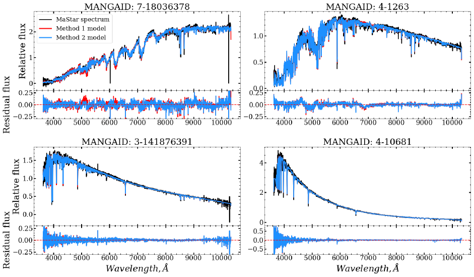
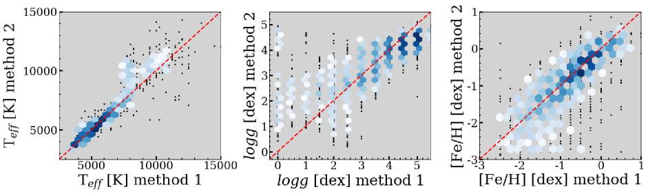
Appendix C اعتبارات المعلمة الإضافية
C.1 الاضطرابات الدقيقة
العلاقة بين المعلمات النجمية الجوية (Teff، log g) والاضطرابات الدقيقة () معقد ويختلف عبر المخطط H-R (Montalbán et al., 2007; García Pérez et al., 2016). طوال تحليلنا استخدمنا ثابت kms-1 لأن هذا هو المتوفر لنماذج BOSZ. وبتثبيت قد نتوقع بعض التأثيرات المنهجية في النتائج الخاصة بالعمالقة والأقزام بسبب اتساع ميزات الامتصاص. نستكشف هنا بإيجاز تأثيرات استخدام النماذج ذات القيم البديلة لـ عند تقدير معالم النجوم القزمة والعملاقة. نحن نركز على الأقزام والعمالقة حيث نلائمهم مع نماذج MARCS التي لها قوالب بقيم مختلفة متوفرة. ونحن نخطط لتضمين كمعلمة حرة في التكرارات المستقبلية لخط المعالجة.
C.1.1 العمالقة
في هذه التجربة نستخدم نماذج MARCS مع هندسة النموذج الكروي، TK، log g dex و 2 أو 5 kms-1. تعكس شبكة المعلمات المختارة هذه ما هو متاح على موقع الويب MARCS. في البداية، تم تحديد جميع الأطياف التي تحتوي على log g dex، ثم نختار عشوائيًا عشرة بالمائة منها لإنشاء عينة تمثيلية لتحليلنا. يتم بعد ذلك تطبيق طريقة MCMC باستخدام شبكات النموذج مع قيم الخاصة بها بشكل مستقل.
في الشكل 21 نعرض مقارنة النتائج عند استخدام النماذج مع 2 أو 5 kms-1. بالنسبة إلى Teff نرى بعض التشتت عند حوالي K وإزاحة أصغر من 100K نحو درجات الحرارة الأعلى عند 5 kms-1. يُظهر السجل g مزيدًا من التشتت وتفضيلًا للجاذبية المنخفضة عند استخدام 5 kms-1. فيما يتعلق بمطابقة النموذج، تكون قيم أفضل بشكل عام عند استخدام kms-1. تم العثور على إزاحة متوسطة لـ 0.2 هنا.
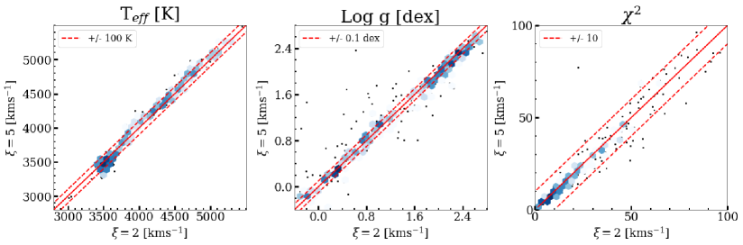
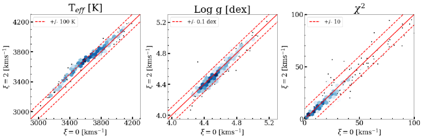
C.1.2 الأقزام
لتحليل الأقزام نستخدم نماذج MARCS مرة أخرى مع هندسة النموذج المتوازي المستوي، TK، log g dex و 0 أو 2 kms-1. يتم اختيار الأطياف باستخدام Teff K و log g dex ويتم استخدام عشرة بالمائة في التحليل.
في الشكل 22 نعرض مقارنة النتائج عند استخدام النماذج مع 0 أو 2 kms-1. فيما يتعلق بـ Teff نرى إزاحة منهجية تقريبًا K تجاه النماذج ذات kms-1 عند درجات حرارة أقل من K. بالنسبة إلى log g هناك تفضيل طفيف للجاذبية الأعلى عند kms-1، ولكن الفرق داخل dex. قيم الجاذبية الأعلى في اتفاق أفضل. مرة أخرى، تكون قيم أصغر بشكل عام بالنسبة إلى kms-1، مع إزاحة متوسطة تبلغ 0.7.
C.2 سرعة الدوران
تؤدي سرعة دوران النجوم إلى توسيع سمات الامتصاص وتقليل عمقها؛ وقد يسبب ذلك تغايرًا بين الدوران وlog g. لمعرفة التأثير الذي قد يحدثه ذلك على الأطياف الاصطناعية بدقة MaStar، نقوم بدمج نماذج BOSZ مع منحنى الدوران (Gray, 2008) لستة قيم v sin i: kms-1. في الشكل 23 نظهر ذلك حتى قيمة v sin i kms -1، يتأثر فقط البكسل المركزي لخطوط الامتصاص، ويكون التأثير ضئيلًا. وفي الحالة القصوى، v sin i kms-1، تصبح خطوط الامتصاص أقل عمقًا وأوسع بشكل ملحوظ. من حيث الانحطاط مع log g، نعرض في الشكل 24 نموذج مع Teff K, log g dex, [Fe/H] dex و v sin i kms-1 سيكون له عمق خط الامتصاص نفسه الذي لنموذج مع log g dex و v sin i kms-1. ومع ذلك، فإن الأجنحة مختلفة بشكل كبير مما يدل على الاتساع من الدوران، وليس التغير في الجاذبية.
علاوة على ذلك، قمنا بدراسة هذا التأثير على عشرين طيفًا MaStar تم تحليلها مسبقًا بواسطة خط المعالجة الخاص بنا v sin i kms-1. الأطياف المختارة تمثل النجوم الساخنة ( TK) حيث أن سرعة الدوران عادة ما تكون أكبر في نطاق درجة الحرارة هذا (Głȩbocki & Gnaciński, 2005). نقوم بدمج نماذج BOSZ للحصول على الأطياف v sin i = kms-1. يتم بعد ذلك استخدام هذه النماذج بشكل مستقل في خط معالجتنا لتحديد المعلمات الجوية الأساسية. في الشكل 25 نظهر التباين في log g مع النماذج الملتوية ولم نجد أي تأثير منهجي بين المتغيرين. تؤكد هذه النتيجة أن تأثير الدوران، عمومًا، ليس مصدر قلق رئيسيًا عند دقة MaStar.
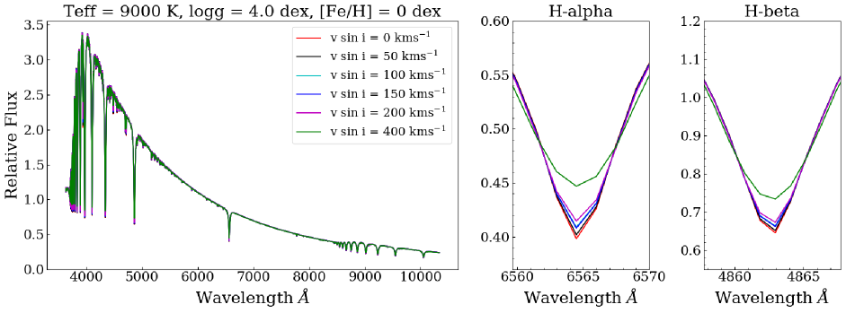
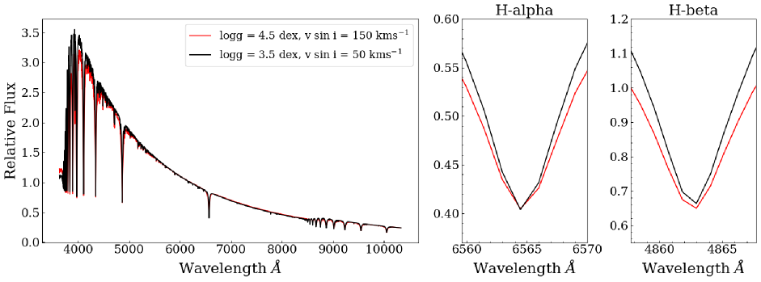
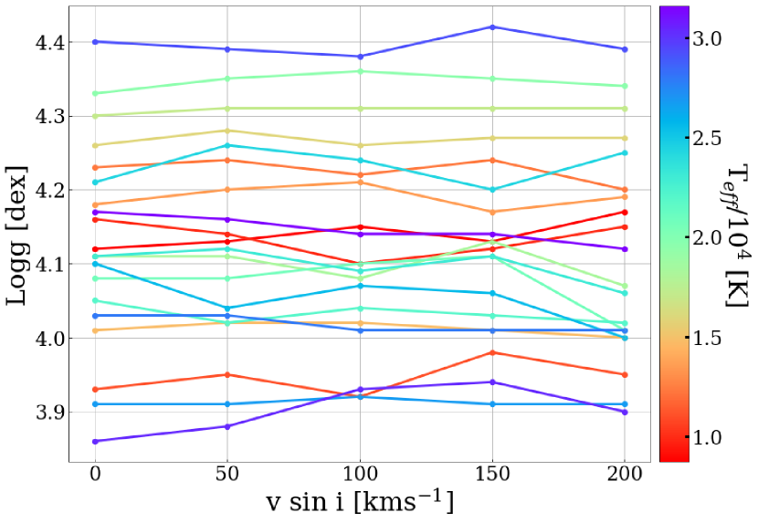